Pipeline of the Paper
Analysis_Pipeline.RmdData Loading
load("../PaperData/Analysis_Pipeline.RData") benchmark = benchmark.RC test = test.RC benchmark.cali = benchmark.calibrator benchmark.pool = benchmark.DECpool.RC
Functions for Depth Normalization
Trimmed Mean of M-values (TMM)
## https://www.bioconductor.org/packages/devel/bioc/vignettes/edgeR/inst/doc/edgeRUsersGuide.eps ## page 14 ## cpm() could compute normalized count per million based on DGE result ## We compute cor() between cpm() and our normalized benchmark data and find it to be 1 norm.TMM = function(raw, groups) { dat.DGE = DGEList(counts = matrix(raw, ncol = length(groups)), group = factor(groups), genes = rownames(raw)) d = calcNormFactors(dat.DGE, method = "TMM") scaling.factor = d$samples$norm.factors * d$samples$lib.size / 1e6 dat.normed = t(t(raw)/scaling.factor) return(list(dat.normed = dat.normed, scaling.factor = scaling.factor, dge.normed = d)) }
Total Count (TC)
## https://academic.oup.com/bib/article/14/6/671/189645 norm.TC = function(raw, groups) { dat.DGE = DGEList(counts = matrix(raw, ncol = length(groups)), group = factor(groups), genes = rownames(raw)) scaling.factor = dat.DGE$samples$lib.size/1e6 dat.normed = t(t(raw)/scaling.factor) return(list(dat.normed = dat.normed, scaling.factor = scaling.factor)) }
Upper Quartile (UQ)
## calcNormFactors could also obtain the UQ normalization factor ## We compute cor() between its UQ and our UQ normalized benchmark data and find it to be 1 norm.UQ = function(raw, groups) { dat.DGE = DGEList(counts = matrix(raw, ncol = length(groups)), group = factor(groups), genes = rownames(raw)) q.factor = apply(dat.DGE$counts, 2, function(x) quantile(x[x != 0], probs = 0.75)) scaling.factor = q.factor/1e6 dat.normed = t(t(raw)/scaling.factor) return(list(dat.normed = dat.normed, scaling.factor = scaling.factor)) }
Median (Med)
## https://academic.oup.com/bib/article/14/6/671/189645 norm.med = function(raw, groups) { dat.DGE = DGEList(counts = matrix(raw, ncol = length(groups)), group = factor(groups), genes = rownames(raw)) m.factor = apply(dat.DGE$counts, 2, function(x) median(x[x != 0])) scaling.factor = m.factor/1e6 dat.normed = t(t(raw)/scaling.factor) return(list(dat.normed = dat.normed, scaling.factor = scaling.factor)) }
DESeq
## https://bioconductor.org/packages/release/bioc/vignettes/DESeq/inst/doc/DESeq.eps ## page 4 norm.DESeq = function(raw, groups) { condition = factor(groups) dat.DGE = estimateSizeFactors(newCountDataSet(raw, condition)) scaling.factor = sizeFactors(dat.DGE) dat.normed = counts(dat.DGE, normalized = T) return(list(dat.normed = dat.normed, scaling.factor = scaling.factor)) }
PoissonSeq
## https://cran.r-project.org/web/packages/PoissonSeq/PoissonSeq.eps norm.PoissonSeq = function(raw, groups = NULL) { scaling.factor = PS.Est.Depth(raw) dat.normed = t(t(raw)/scaling.factor) return(list(dat.normed = dat.normed, scaling.factor = scaling.factor)) }
Quantile Normalization (QN)
## http://jtleek.com/genstats/inst/doc/02_05_normalization.html norm.QN = function(raw, groups = NULL, filter = FALSE) { if (filter == TRUE) { raw = log2(raw + 1) raw = raw[rowMeans(raw) > 2, ] } else {raw = log2(raw + 1)} dat.log.normed = normalizeQuantiles(as.matrix(raw)) dat.normed = 2^dat.log.normed - 1 colnames(dat.normed) = colnames(raw) rownames(dat.normed) = rownames(raw) return(list(dat.normed = dat.normed)) }
SVA for Sequencing (SVASeq)
## https://bioconductor.org/packages/release/bioc/vignettes/sva/inst/doc/sva.eps ## page 13 ## calibrator genes include tag "cali" ## Normalized data only used for exploration ## https://www.biostars.org/p/121489/ norm.SVA = function(raw, groups) { filter = apply(raw, 1, function(x) length(x[x > 5]) >= 2) dat.sva = raw[filter, ] genes = rownames(dat.sva) mod1 = model.matrix(~ groups) mod0 = cbind(mod1[,1]) dat0 = as.matrix(dat.sva) svseq = svaseq(dat0, mod1, mod0, n.sv = 1)$sv adjust = cbind(mod1, svseq) hat = solve(t(adjust) %*% adjust) %*% t(adjust) beta = (hat %*% t(raw)) P = ncol(mod1) dat.normed = raw - t(as.matrix(adjust[,-c(1:P)]) %*% beta[-c(1:P),]) return(list(dat.normed = dat.normed, adjust.factor = svseq)) }
Remove Unwanted Variation (RUV)
## http://jtleek.com/svaseq/zebrafish.html ## http://www.bioconductor.org/packages/devel/bioc/vignettes/RUVSeq/inst/doc/RUVSeq.eps ## calibrator genes include tag "cali" norm.RUV = function(raw, groups, method = c("RUVg", "RUVs", "RUVr")) { filter = apply(raw, 1, function(x) length(x[x > 5]) >= 2) dat.ruv = raw[filter, ] genes = rownames(dat.ruv) condition = factor(groups) set = newSeqExpressionSet(as.matrix(dat.ruv), phenoData = data.frame(condition, row.names = colnames(dat.ruv))) design = model.matrix(~ condition, data = pData(set)) y = DGEList(counts = counts(set), group = condition) y = calcNormFactors(y, method = "upperquartile") y = estimateGLMCommonDisp(y, design) y = estimateGLMTagwiseDisp(y, design) fit = glmFit(y, design) lrt = glmLRT(fit, coef = 2) top = topTags(lrt, n = nrow(set))$table spikes = rownames(set)[which(!(rownames(set) %in% rownames(top)[1:0.15*nrow(raw)]))] if (method == "RUVg") { t = RUVg(set, spikes, k = 1) dat.normed = normCounts(t) return(list(dat.normed = dat.normed, adjust.factor = t$W)) }else if (method == "RUVs") { differences = makeGroups(condition) controls = rownames(dat.ruv) t = RUVs(set, controls, k = 1, differences) dat.normed = normCounts(t) return(list(dat.normed = dat.normed, adjust.factor = t$W)) }else if (method == "RUVr") { design = model.matrix(~ condition, data = pData(set)) y = DGEList(counts = counts(set), group = condition) y = calcNormFactors(y, method = "upperquartile") y = estimateGLMCommonDisp(y, design) y = estimateGLMTagwiseDisp(y, design) fit = glmFit(y, design) res = residuals(fit, type = "deviance") setUQ = betweenLaneNormalization(set, which = "upper") controls = rownames(dat.ruv) t = RUVr(setUQ, controls, k = 1, res) dat.normed = normCounts(t) return(list(dat.normed = dat.normed, adjust.factor = t$W)) } }
Functions for Differential Expression Analysis
limma-voom DE
## https://ucdavis-bioinformatics-training.github.io/2018-June-RNA-Seq-Workshop/thursday/DE.html DE.voom = function(RC, groups, P = 0.01, normalized = TRUE, adjust = NULL) { event = factor(groups) if (normalized == TRUE) { design = model.matrix(~ 0 + event) colnames(design) = levels(event) } else { design = model.matrix(~ 0 + event + adjust) colnames(design)[1:2] = levels(event) } contrast.mx = makeContrasts(PMFH - MXF, levels = design) d = DGEList(RC, genes = rownames(RC)) d.voom = voom(d, design) fit = lmFit(d.voom, design) fit.contr = contrasts.fit(fit, contrast.mx) fit.eb = eBayes(fit.contr) P.value = fit.eb$p.value fc.log2 = fit.eb$coef out = cbind(P.value,fc.log2) out = out[order(out[,1]),] colnames(out) = c("Pvalue","log2.FC(MXF/PMFH)") return(list(id.list = rownames(out[out[,1] < P,]), p.val = out)) } norm.voom.pip = function(raw, groups, method, RUV_method = NULL, filter = FALSE) { if (method == "norm.none") { test.DE = DE.voom(RC = raw, groups = groups, P = 0.01) } if (method %in% c("norm.TMM", "norm.TC", "norm.UQ", "norm.med", "norm.DESeq", "norm.PoissonSeq")) { FUN = match.fun(method) test.norm = FUN(raw, groups)$dat.normed test.DE = DE.voom(RC = test.norm, groups = groups, P = 0.01) } if (method == "norm.QN") { test.norm = norm.QN(raw, groups, filter = filter)$dat.normed test.DE = DE.voom(RC = test.norm, groups = groups, P = 0.01) } if (method %in% c("norm.SVA", "norm.RUV")) { if (method == "norm.SVA") { test.norm = norm.SVA(raw, group = groups)$adjust.factor } else if (method == "norm.RUV") { test.norm = norm.RUV(raw, group = groups, method = RUV_method)$adjust.factor } test.DE = DE.voom(RC = raw, groups, P = 0.01, normalized = FALSE, adjust = test.norm) } return(test.DE = test.DE) }
edgeR DE
## https://web.stanford.edu/class/bios221/labs/rnaseq/lab_4_rnaseq.html ## https://www.biostars.org/p/110861/ DE.edgeR = function(RC, groups, P = 0.01, normalized = TRUE, adjust = NULL) { event = factor(groups); if (normalized == TRUE) { design = model.matrix(~ 0 + event) colnames(design) = levels(event) } else { design = model.matrix(~ 0 + event + adjust) colnames(design)[1:2] = levels(event) } d = DGEList(RC, group = event, genes = rownames(RC)) d = estimateDisp(d, design) DE = exactTest(d, pair = levels(d$samples$group)[1:2]) out = DE$table[,c(3,1)] out = out[order(out[,1]),] colnames(out) = c("Pvalue","log2.FC(MXF/PMFH)") return(list(id.list = rownames(out[out[,1] < P,]), p.val = out)) } norm.edgeR.pip = function(raw, groups, method, RUV_method = NULL, filter = FALSE) { if (method == "norm.none") { test.DE = DE.edgeR(RC = raw, groups = groups) } if (method %in% c("norm.TMM", "norm.TC", "norm.UQ", "norm.med", "norm.DESeq", "norm.PoissonSeq")) { FUN = match.fun(method) test.norm = FUN(raw, groups)$dat.normed test.DE = DE.edgeR(RC = test.norm, groups = groups) } if (method == "norm.QN") { test.norm = norm.QN(raw, groups, filter = filter)$dat.normed test.DE = DE.edgeR(RC = test.norm, groups = groups) } if (method %in% c("norm.SVA", "norm.RUV")) { if (method == "norm.SVA") { test.norm = norm.SVA(raw, group = groups)$adjust.factor } else if (method == "norm.RUV") { test.norm = norm.RUV(raw, group = groups, method = RUV_method)$adjust.factor } test.DE = DE.edgeR(RC = raw, groups, normalized = FALSE, adjust = test.norm) } return(test.DE = test.DE) }
Quality Check for Benchmark Data
Correlation Among Pooled Benchmark Data
benchmark.log = log2(benchmark + 1) benchmark.pool.log = log2(benchmark.pool + 1) benchmark.log.MXF.mean = rowMeans(benchmark.log[, grepl("MXF", colnames(benchmark.log))]) benchmark.log.PMFH.mean = rowMeans(benchmark.log[, grepl("PMFH", colnames(benchmark.log))]) benchmark.pool.log.MXF.mean = rowMeans(benchmark.log[, grepl("MXF", colnames(benchmark.log))]) benchmark.pool.log.PMFH.mean = rowMeans(benchmark.log[, grepl("PMFH", colnames(benchmark.log))]) CCC.pooled.benchmark.MXF = c(CCC(benchmark.pool.log[,1], benchmark.pool.log[,3])$rho.c[1,1], CCC(benchmark.pool.log[,1], benchmark.pool.log[,5])$rho.c[1,1], CCC(benchmark.pool.log[,3], benchmark.pool.log[,5])$rho.c[1,1]) cor.pooled.benchmark.MXF = c(cor(benchmark.pool.log[,1], benchmark.pool.log[,3]), cor(benchmark.pool.log[,1], benchmark.pool.log[,5]), cor(benchmark.pool.log[,3], benchmark.pool.log[,5])) CCC.pooled.benchmark.MXF #> [1] 0.9683093 0.9839479 0.9720500 cor.pooled.benchmark.MXF #> [1] 0.9851294 0.9844770 0.9835578 CCC.pooled.benchmark.PMFH = c(CCC(benchmark.pool.log[,2], benchmark.pool.log[,4])$rho.c[1,1], CCC(benchmark.pool.log[,2], benchmark.pool.log[,6])$rho.c[1,1], CCC(benchmark.pool.log[,4], benchmark.pool.log[,6])$rho.c[1,1]) cor.pooled.benchmark.PMFH = c(cor(benchmark.pool.log[,2], benchmark.pool.log[,4]), cor(benchmark.pool.log[,2], benchmark.pool.log[,6]), cor(benchmark.pool.log[,4], benchmark.pool.log[,6])) CCC.pooled.benchmark.PMFH #> [1] 0.9808560 0.9823032 0.9851071 cor.pooled.benchmark.PMFH #> [1] 0.9810193 0.9823441 0.9851556
Relationship Between Pooled and Individual MXF Samples (Figure 1A)
par(pty = "s") smoothScatter(rowMeans(benchmark.pool.log[, grepl("MXF", colnames(benchmark.pool.log))]), benchmark.log.MXF.mean, xlab = "log2(mean count across technical replicates for the pooled sample)", ylab = "log2(mean count across individual tumor samples)", main = "MXF") abline(0,1)
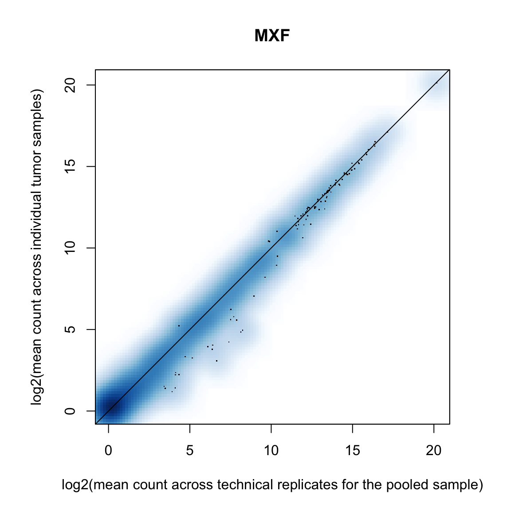
Relationship Between Pooled and Individual PMFH Samples (Figure 1B)
par(pty = "s") smoothScatter(rowMeans(benchmark.pool.log[, grepl("PMFH", colnames(benchmark.pool.log))]), benchmark.log.PMFH.mean, xlab = "log2(mean count across technical replicates for the pooled sample)", ylab = "log2(mean count across individual tumor samples)", main = "PMFH") abline(0,1)
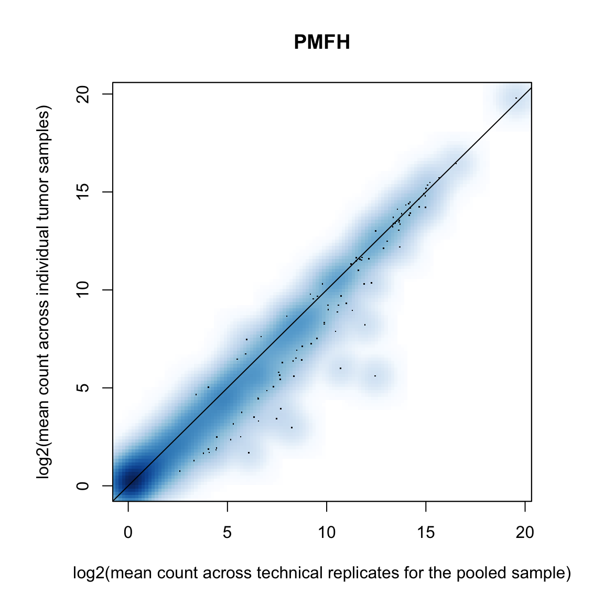
Boxplot for Calibrators (Figure 1C)
benchmark.cali.log = log2(benchmark.cali + 1) bench.cali.MXF = benchmark.cali.log[, grepl("MXF", colnames(benchmark.cali))] bench.cali.PMFH = benchmark.cali.log[, grepl("PMFH", colnames(benchmark.cali))] boxplot(bench.cali.MXF[1, ], bench.cali.PMFH[1, ], bench.cali.MXF[2, ], bench.cali.PMFH[2, ], bench.cali.MXF[3, ], bench.cali.PMFH[3, ], bench.cali.MXF[4, ], bench.cali.PMFH[4, ], bench.cali.MXF[5, ], bench.cali.PMFH[5, ], bench.cali.MXF[6, ], bench.cali.PMFH[6, ], bench.cali.MXF[7, ], bench.cali.PMFH[7, ], bench.cali.MXF[8, ], bench.cali.PMFH[8, ], bench.cali.MXF[9, ], bench.cali.PMFH[9, ], bench.cali.MXF[10, ], bench.cali.PMFH[10, ], at = c(1,2,4,5,7,8,10,11,13,14,16,17,19,20,22,23,25,26,28,29), las = 2, xlab = "Calibrator Index", ylab = "log2(count)", pch = 16, cex = 0.5, col = c("white", "grey"), main = "Calibrators") axis(1, at = c(1.5, 4.5, 7.5, 10.5, 13.5, 16.5, 19.5, 22.5, 25.5, 28.5), labels = c("cali_1", "cali_2", "cali_3", "cali_4", "cali_5", "cali_6", "cali_7", "cali_8", "cali_9", "cali_10"), las = 2, tck = 0) legend("bottomleft",c("MXF", "PMFH"), bty = "n", pch = c(0, 15), cex = 1, col = c("grey", "grey"))
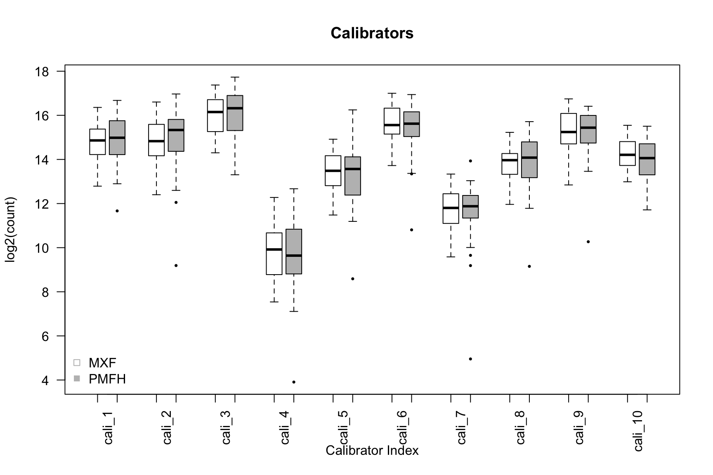
Scatter Plot Between Sextuplets of Each Pooled Samples (Figure S1A)
benchmark.pool.MXF = log2(benchmark.pool[, grepl("MXF", colnames(benchmark.pool))] + 1) colnames(benchmark.pool.MXF) = str_replace(colnames(benchmark.pool.MXF), "MXF_", "") benchmark.pool.PMFH = log2(benchmark.pool[, grepl("PMFH", colnames(benchmark.pool))] + 1) colnames(benchmark.pool.PMFH) = str_replace(colnames(benchmark.pool.PMFH), "PMFH_", "") panel.cor <- function(x, y){ usr <- par("usr"); on.exit(par(usr)) par(usr = c(0, 1, 0, 1)) r <- round(cor(x, y), digits = 2) txt <- paste0("", r) cex.cor <- 0.8/strwidth(txt) text(0.5, 0.5, txt, cex = cex.cor * r) } panel_smooth = function(x, y) { smoothScatter(x, y, nrpoints = 0, add = TRUE) abline(0,1) } ## MXF pairs(benchmark.pool.MXF, panel = panel_smooth, upper.panel = panel.cor, main = "Scatterplot for the Triplicate of the Pooled MXF")
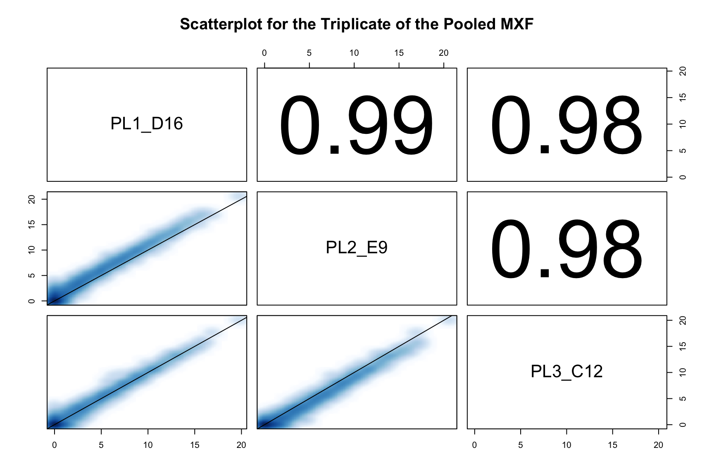
## PMFH pairs(benchmark.pool.PMFH, panel = panel_smooth, upper.panel = panel.cor, main = "Scatterplot for the Triplicate of the Pooled PMFH")
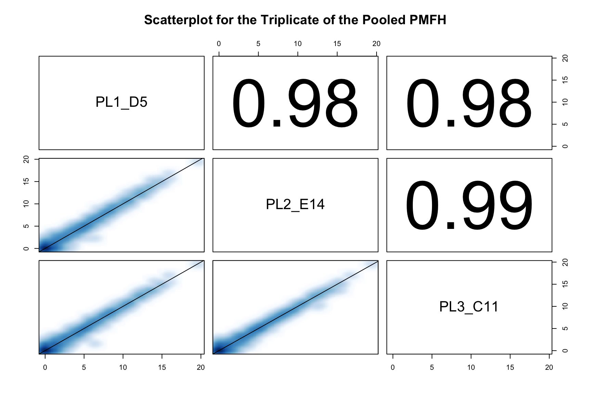
Analysis of Benchmark Data
Overall Data Distribution (Figure 2A)
boxplot(benchmark.log, col = ifelse(grepl("MXF", colnames(benchmark.log)), rainbow(2)[1], rainbow(2)[2]), xlab = "Sample Index", ylab = "log2(count)", ylim = c(0, 20), xaxt = "n", outline = FALSE, main = "Boxplot for Benchmark Data") legend("topright",c("MXF", "PMFH"), bty = "n", pch = 15, cex = 1, col = c(rainbow(2)[1], rainbow(2)[2]))
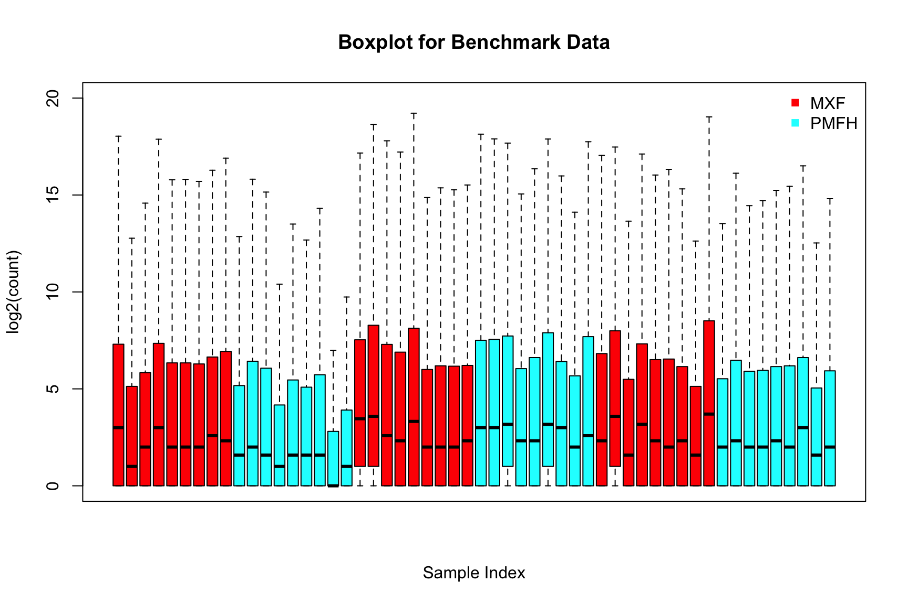
DEA (Figure 2B)
emp.group = c(rep(c(rep('MXF',9),rep('PMFH',9)),3)) benchmark.voom = DE.voom(RC = benchmark, groups = emp.group, P = 0.01) DE.bench = benchmark.voom$id.list benchmark.voom.dat = data.frame(dm = benchmark.voom$p.val[,2], p.value = benchmark.voom$p.val[,1]) mask <- with(benchmark.voom.dat, p.value < .01) cols <- ifelse(mask,"red", "black") with(benchmark.voom.dat, plot(dm, -log10(p.value), cex = .5, pch = 16, col = cols, xlim = c(-3.6, 3.6), ylim = c(0, 6), xlab = "Mean Difference: MXF - PMFH", main = "Volcano Plot")) abline(h = 2, lty = 2)
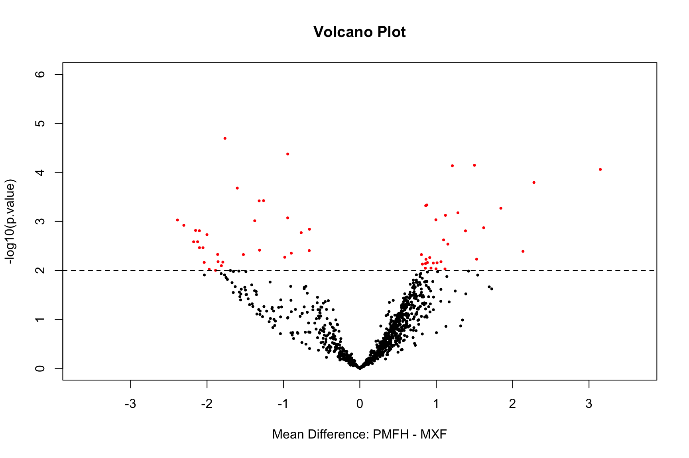
Scatterplot of Group Mean Averages V.S. Group Mean Differences for Significant MiRNAs (Figure S2A)
cols = ifelse(rownames(benchmark.log) %in% DE.bench, "red", "black") plot(rowMeans(benchmark.log), apply(benchmark.log[,grepl("MXF", colnames(benchmark.log))], 1, mean) - apply(benchmark.log[,grepl("PMFH", colnames(benchmark.log))], 1, mean), pch = 16, cex = 0.5, col = cols, xlab = "Mean Average", ylab = "Mean Difference: MXF - PMFH", main = "Benchmark Data")
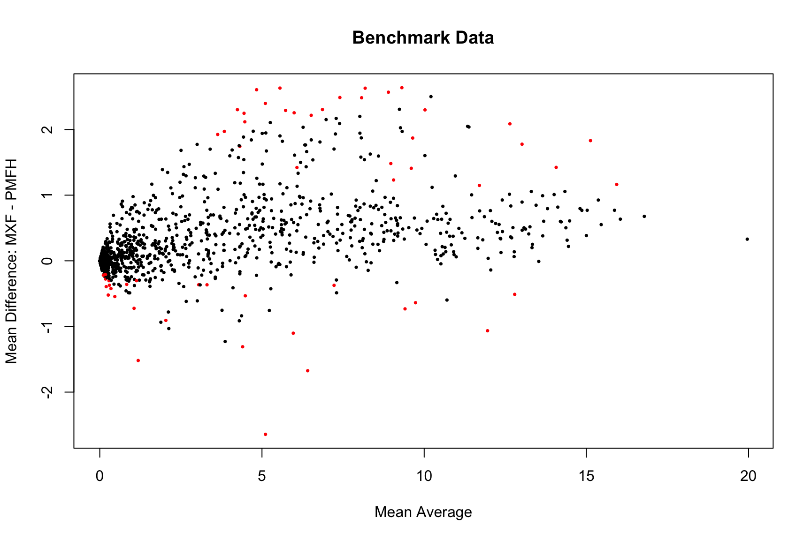
Group Mean Averages for Significant MiRNAs (Figure S2B)
DE.bench = DE.voom(RC = benchmark, groups = emp.group, P = 0.01)$id.list hist(rowMeans(benchmark.log[DE.bench,]), xlab = "Mean Average", main = "Histogram of Mean Averages for Significant MiRNAs in Benchmark Data", breaks = seq(0, 16, 1))
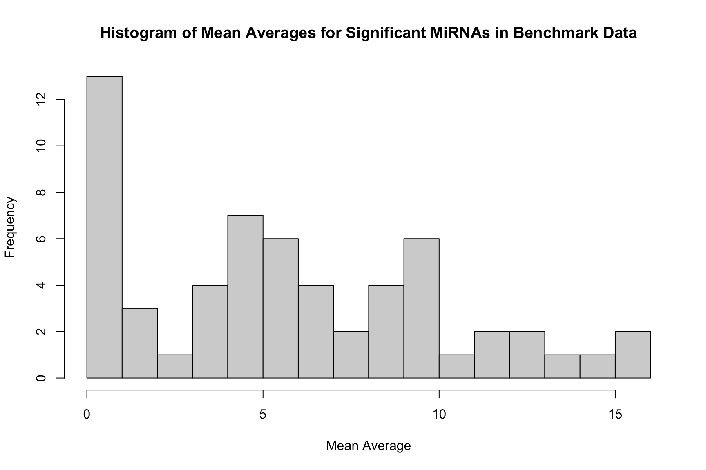
Group Mean Differences for Significant MiRNAs (Figure S2C)
M.mean.bench <- apply(benchmark.log[DE.bench,grepl("MXF", colnames(benchmark.log))], 1, mean) P.mean.bench <- apply(benchmark.log[DE.bench,grepl("PMFH", colnames(benchmark.log))], 1, mean) hist(M.mean.bench - P.mean.bench, xlab = "Mean Differences", main = "Histogram of Mean Differences for Significant MiRNAs in Benchmark Data", breaks = seq(-3, 3, 1))
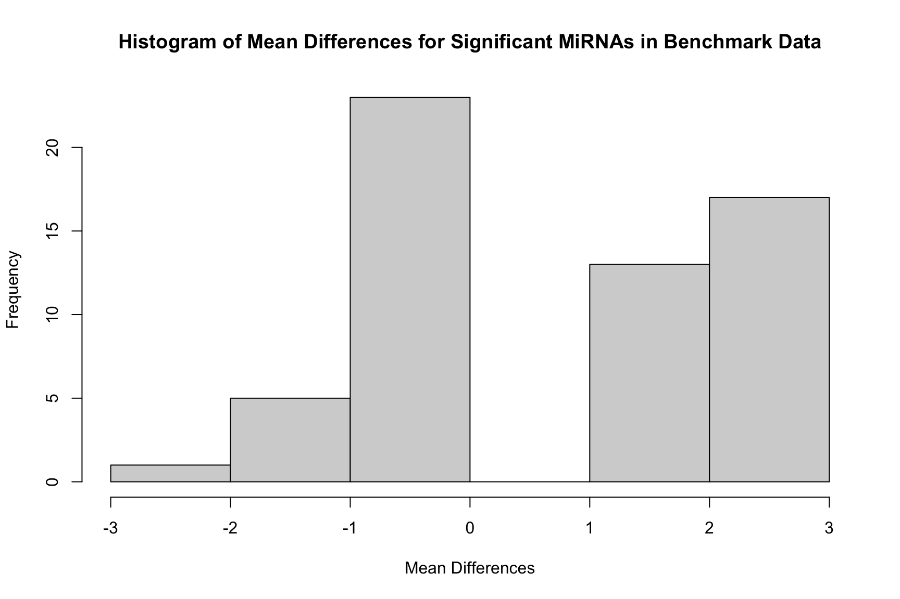
Analysis of Test Data
Overall Data Distribution (Figure 3A)
test.log = log2(test + 1) boxplot(test.log, col = ifelse(grepl("MXF", colnames(benchmark.log)), rainbow(2)[1], rainbow(2)[2]), xlab = "Sample Index", ylab ="log2(count)", xaxt = "n", outline = FALSE, ylim = c(0, 20), main = "Boxplot for Test Data") legend("topleft",c("MXF", "PMFH"), bty = "n", pch = 15, cex = 1, col = c(rainbow(2)[1], rainbow(2)[2]))
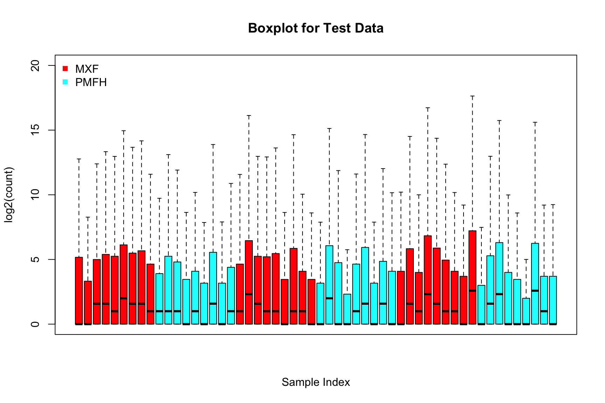
DEA (Figure 3B)
test.voom = DE.voom(RC = test, groups = emp.group, P = 0.01) test.voom.dat = data.frame(dm = test.voom$p.val[,2], p.value = test.voom$p.val[,1]) mask = with(test.voom.dat, p.value < .01) cols = ifelse(mask,"red", "black") with(test.voom.dat, plot(dm, -log10(p.value), cex = .5, pch = 16, ylim = c(0, 6), xlim = c(-3.6, 3.6), col = cols, xlab = "Mean Difference: MXF - PMFH", main = "Volcano Plot")) abline(h = 2, lty = 2)
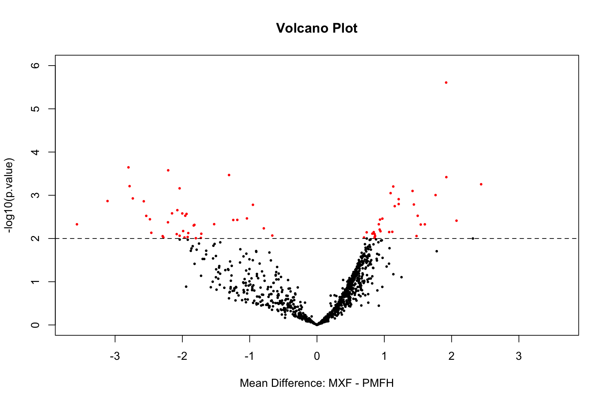
Venn Diagram Between Benchmark and Test (Figure 3C)
pval.bench.test = data.frame(cbind(bench.pval = benchmark.voom$p.val[,1], test.pval = test.voom$p.val[rownames(benchmark.voom$p.val),1])) attach(pval.bench.test) bench.sig <- (bench.pval < 0.01) test.sig <- (test.pval < 0.01) venn2 <- cbind(bench.sig, test.sig) vennDiagram(vennCounts(venn2), names = c("Benchmark", "Test"), main = "Venn Diagram", cex = 1.5, counts.col = rainbow(1))
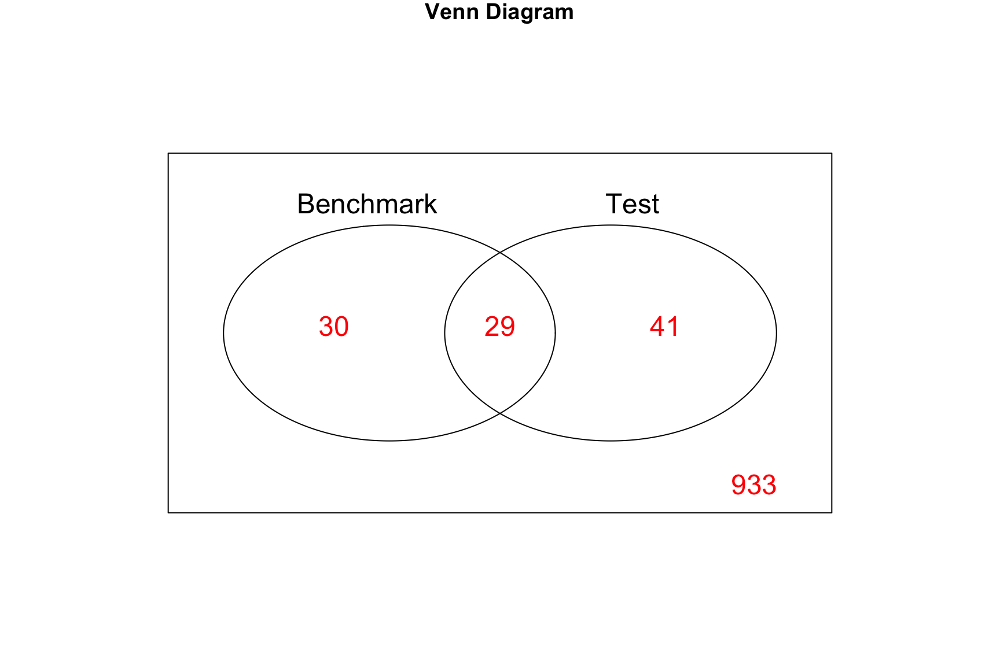
Depth Normalization Methods Evaluation Using Voom
Evaluation Metrics
emp.group = c(rep(c(rep('MXF',9),rep('PMFH',9)),3)) test.TMM = norm.TMM(test, emp.group)$dat.normed test.TC = norm.TC(test, emp.group)$dat.normed test.UQ = norm.UQ(test, emp.group)$dat.normed test.med = norm.med(test, emp.group)$dat.normed test.DESeq = norm.DESeq(test, emp.group)$dat.normed test.PoissonSeq = norm.PoissonSeq(test)$dat.normed #> 328 genes has been filtered because they contains too small number of reads across the experiments. test.QN = norm.QN(test)$dat.normed test.QN.filter = norm.QN(test, filter = TRUE)$dat.normed test.SVA = norm.SVA(test, emp.group)$dat.normed #> Number of significant surrogate variables is: 1 #> Iteration (out of 5 ):1 2 3 4 5 test.RUVg = norm.RUV(test, emp.group, method = "RUVg")$dat.normed test.RUVs = norm.RUV(test, emp.group, method = "RUVs")$dat.normed test.RUVr = norm.RUV(test, emp.group, method = "RUVr")$dat.normed statistics = function(method, RUV_method = NULL, filter = FALSE, marker_selection = FALSE, selected_marker = NULL) { voom.test = norm.voom.pip(raw = test, groups = emp.group, method = method, RUV_method = RUV_method, filter = filter) voom.bench = DE.voom(RC = benchmark, groups = emp.group, P = 0.01) stat.DE = matrix(, nrow = 1033, ncol = 2) rownames(stat.DE) = rownames(benchmark) colnames(stat.DE) = c("Benchmark", "NormTest") stat.DE[voom.bench$id.list, 1] = "DE" stat.DE[voom.test$id.list, 2] = "DE" stat.DE[is.na(stat.DE)] = "non-DE" if (marker_selection == TRUE) {stat.DE = stat.DE[selected_marker,]} t = table(prediction = stat.DE[,2], truth = stat.DE[,1]) return(list(table = t, TPR = t[1,1]/sum(t[,1]), FPR = t[1,2]/sum(t[,2]), FDR = t[1,2]/sum(t[1,]), FNR = t[2,1]/sum(t[,1]))) } statistics("norm.none") #> $table #> truth #> prediction DE non-DE #> DE 29 41 #> non-DE 30 933 #> #> $TPR #> [1] 0.4915254 #> #> $FPR #> [1] 0.04209446 #> #> $FDR #> [1] 0.5857143 #> #> $FNR #> [1] 0.5084746 statistics("norm.TMM") #> $table #> truth #> prediction DE non-DE #> DE 20 19 #> non-DE 39 955 #> #> $TPR #> [1] 0.3389831 #> #> $FPR #> [1] 0.01950719 #> #> $FDR #> [1] 0.4871795 #> #> $FNR #> [1] 0.6610169 statistics("norm.TC") #> $table #> truth #> prediction DE non-DE #> DE 24 25 #> non-DE 35 949 #> #> $TPR #> [1] 0.4067797 #> #> $FPR #> [1] 0.02566735 #> #> $FDR #> [1] 0.5102041 #> #> $FNR #> [1] 0.5932203 statistics("norm.UQ") #> $table #> truth #> prediction DE non-DE #> DE 18 33 #> non-DE 41 941 #> #> $TPR #> [1] 0.3050847 #> #> $FPR #> [1] 0.0338809 #> #> $FDR #> [1] 0.6470588 #> #> $FNR #> [1] 0.6949153 statistics("norm.med") #> $table #> truth #> prediction DE non-DE #> DE 16 38 #> non-DE 43 936 #> #> $TPR #> [1] 0.2711864 #> #> $FPR #> [1] 0.03901437 #> #> $FDR #> [1] 0.7037037 #> #> $FNR #> [1] 0.7288136 statistics("norm.DESeq") #> $table #> truth #> prediction DE non-DE #> DE 22 30 #> non-DE 37 944 #> #> $TPR #> [1] 0.3728814 #> #> $FPR #> [1] 0.03080082 #> #> $FDR #> [1] 0.5769231 #> #> $FNR #> [1] 0.6271186 statistics("norm.PoissonSeq") #> 328 genes has been filtered because they contains too small number of reads across the experiments. #> $table #> truth #> prediction DE non-DE #> DE 22 17 #> non-DE 37 957 #> #> $TPR #> [1] 0.3728814 #> #> $FPR #> [1] 0.0174538 #> #> $FDR #> [1] 0.4358974 #> #> $FNR #> [1] 0.6271186 statistics("norm.QN") #> $table #> truth #> prediction DE non-DE #> DE 20 31 #> non-DE 39 943 #> #> $TPR #> [1] 0.3389831 #> #> $FPR #> [1] 0.03182752 #> #> $FDR #> [1] 0.6078431 #> #> $FNR #> [1] 0.6610169 statistics("norm.QN", filter = TRUE) #> $table #> truth #> prediction DE non-DE #> DE 19 19 #> non-DE 40 955 #> #> $TPR #> [1] 0.3220339 #> #> $FPR #> [1] 0.01950719 #> #> $FDR #> [1] 0.5 #> #> $FNR #> [1] 0.6779661 statistics("norm.SVA") #> Number of significant surrogate variables is: 1 #> Iteration (out of 5 ):1 2 3 4 5 #> $table #> truth #> prediction DE non-DE #> DE 21 19 #> non-DE 38 955 #> #> $TPR #> [1] 0.3559322 #> #> $FPR #> [1] 0.01950719 #> #> $FDR #> [1] 0.475 #> #> $FNR #> [1] 0.6440678 statistics("norm.RUV", RUV_method = "RUVg") #> $table #> truth #> prediction DE non-DE #> DE 7 5 #> non-DE 52 969 #> #> $TPR #> [1] 0.1186441 #> #> $FPR #> [1] 0.00513347 #> #> $FDR #> [1] 0.4166667 #> #> $FNR #> [1] 0.8813559 statistics("norm.RUV", RUV_method = "RUVr") #> $table #> truth #> prediction DE non-DE #> DE 36 93 #> non-DE 23 881 #> #> $TPR #> [1] 0.6101695 #> #> $FPR #> [1] 0.09548255 #> #> $FDR #> [1] 0.7209302 #> #> $FNR #> [1] 0.3898305 statistics("norm.RUV", RUV_method = "RUVs") #> $table #> truth #> prediction DE non-DE #> DE 13 9 #> non-DE 46 965 #> #> $TPR #> [1] 0.220339 #> #> $FPR #> [1] 0.009240246 #> #> $FDR #> [1] 0.4090909 #> #> $FNR #> [1] 0.779661
Functions for Plots
subsetp.concordance = function(benchmark, test, groups, method, RUV_method = NULL, filter = FALSE) { test.DE = norm.voom.pip(test, groups, method, RUV_method = RUV_method, filter = filter) benchmark.DE = DE.voom(RC = benchmark, groups = groups, P = 0.01) benchmark.DE.subset = subset(benchmark.DE$p.val[,1], benchmark.DE$p.val[,1] < 0.01) subset.gene = intersect(names(benchmark.DE.subset), names(test.DE$p.val[,1])) test.DE.subset = test.DE$p.val[,1][subset.gene] benchmark.DE.subset = benchmark.DE.subset[subset.gene] benchmark.DE.log10 = -log10(benchmark.DE.subset) test.DE.log10 = -log10(test.DE.subset) conc = CCC(benchmark.DE.log10, test.DE.log10)$rho.c[1,1] return(list(subp.benchmark = benchmark.DE.log10, subp.test = test.DE.log10, comp.test = test.DE$p.val[,1], conc = conc, sig.test = test.DE$id.list, sig.benchmark = benchmark.DE$id.list)) } subp.test = subsetp.concordance(benchmark, test, emp.group, method = "norm.none") subp.TMM = subsetp.concordance(benchmark, test, emp.group, method = "norm.TMM") subp.TC = subsetp.concordance(benchmark, test, emp.group, method = "norm.TC") subp.UQ = subsetp.concordance(benchmark, test, emp.group, method = "norm.UQ") subp.med = subsetp.concordance(benchmark, test, emp.group, method = "norm.med") subp.DESeq = subsetp.concordance(benchmark, test, emp.group, method = "norm.DESeq") subp.PoissonSeq = subsetp.concordance(benchmark, test, emp.group, method = "norm.PoissonSeq") #> 328 genes has been filtered because they contains too small number of reads across the experiments. subp.QN = subsetp.concordance(benchmark, test, emp.group, method = "norm.QN") subp.QN.filter = subsetp.concordance(benchmark, test, emp.group, method = "norm.QN", filter = TRUE) subp.SVA = subsetp.concordance(benchmark, test, emp.group, method = "norm.SVA") #> Number of significant surrogate variables is: 1 #> Iteration (out of 5 ):1 2 3 4 5 subp.RUVg = subsetp.concordance(benchmark, test, emp.group, method = "norm.RUV", RUV_method = "RUVg") subp.RUVr = subsetp.concordance(benchmark, test, emp.group, method = "norm.RUV", RUV_method = "RUVr") subp.RUVs = subsetp.concordance(benchmark, test, emp.group, method = "norm.RUV", RUV_method = "RUVs")
RLE Plots (Figure 4)
### https://arxiv.org/postscript/1704.03590.eps rle.benchmark.raw = benchmark colnames(rle.benchmark.raw) = colnames(test) rle.benchmark = log2(rle.benchmark.raw + 1) rle.benchmark = t(apply(rle.benchmark, 1, function(x) x - median(x))) MXF = rle.benchmark[, grepl("MXF", colnames(rle.benchmark))] MXF = MXF[, names(sort(apply(MXF, 2, quantile)[4,], T))] PMFH = rle.benchmark[, grepl("PMFH", colnames(rle.benchmark))] PMFH = PMFH[, names(sort(apply(PMFH, 2, quantile)[4,], T))] rle.benchmark = cbind(MXF, PMFH) RLE.plot = function(raw, main, bench = FALSE) { raw.log = log2(raw + 1) rle = t(apply(raw.log, 1, function(x) x - median(x))) boxplot(rle, col = c(rep(rainbow(2)[1], 27), rep(rainbow(2)[2], 27)), ylab = "RLE", ylim = c(-6, 6), outline = FALSE, xaxt = "n", main = main) if (bench == TRUE) { legend("topright",c("MXF", "PMFH"), bty = "n", pch = 15, cex = 1, col = c(rainbow(2)[1], rainbow(2)[2])) } } par(mfrow=c(7,2), cex = 1.2) RLE.plot(rle.benchmark.raw[,colnames(rle.benchmark)], main = "RLEplot for Benchmark Data", bench = TRUE) RLE.plot(test[,colnames(rle.benchmark)], main = "RLEplot for Test Data without Normalization") RLE.plot(test.TMM[,colnames(rle.benchmark)], main = "RLEplot for Test Data with TMM Normalization") RLE.plot(test.TC[,colnames(rle.benchmark)], main = "RLEplot for Test Data with Total Count Normalization") RLE.plot(test.UQ[,colnames(rle.benchmark)], main = "RLEplot for Test Data with Upper Quantile Normalization") RLE.plot(test.med[,colnames(rle.benchmark)], main = "RLEplot for Test Data with Median Normalization") RLE.plot(test.DESeq[,colnames(rle.benchmark)], main = "RLEplot for Test Data with DESeq Normalization") RLE.plot(test.PoissonSeq[,colnames(rle.benchmark)], main = "RLEplot for Test Data with PoissonSeq Normalization") RLE.plot(test.QN[,colnames(rle.benchmark)], main = "RLEplot for Test Data with Quantile Normalization Normalization without Filtering") RLE.plot(test.QN.filter[,colnames(rle.benchmark)], main = "RLEplot for Test Data with Quantile Normalization Normalization with Filtering") RLE.plot(test.SVA[,colnames(rle.benchmark)], main = "RLEplot for Test Data with SVA Normalization") RLE.plot(test.RUVg[,colnames(rle.benchmark)], main = "RLEplot for Test Data with RUVg Normalization") RLE.plot(test.RUVr[,colnames(rle.benchmark)], main = "RLEplot for Test Data with RUVr Normalization") RLE.plot(test.RUVs[,colnames(rle.benchmark)], main = "RLEplot for Test Data with RUVs Normalization")
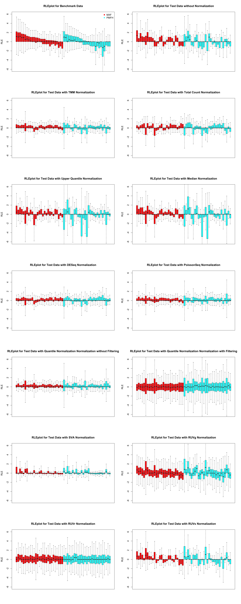
Overall Distribution of Normalized Data (Figure S4)
boxplot(log2(test.TMM + 1)[,colnames(rle.benchmark)], col = c(rep(rainbow(2)[1], 27), rep(rainbow(2)[2], 27)), xlab = "Sample Index", ylab = "log2(count)", outline = FALSE, xaxt = "n", staplewex = 0.5, main = "Boxplot for Test Data after TMM Normalization") legend("topright", c("MXF", "PMFH"), bty = "n", pch = 15, cex = 1, col = c(rainbow(2)[1], rainbow(2)[2]))
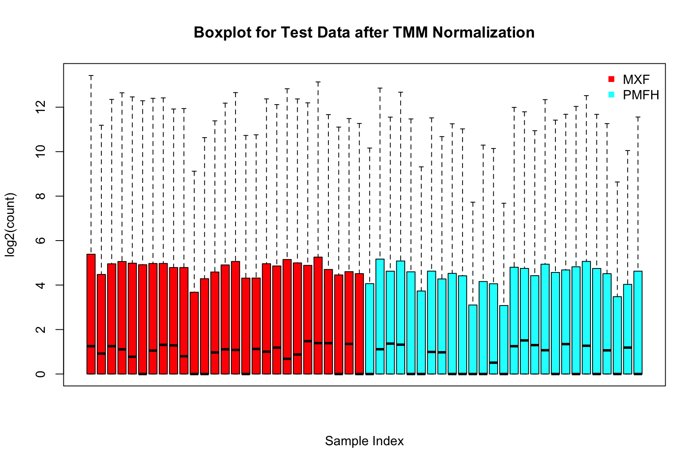
boxplot(log2(test.TC + 1)[,colnames(rle.benchmark)], col = c(rep(rainbow(2)[1], 27), rep(rainbow(2)[2], 27)), xlab = "Sample Index", ylab = "log2(count)", outline = FALSE, xaxt = "n", staplewex = 0.5, main = "Boxplot for Test Data after Total Count Normalization") legend("topright", c("MXF", "PMFH"), bty = "n", pch = 15, cex = 1, col = c(rainbow(2)[1], rainbow(2)[2]))

boxplot(log2(test.UQ + 1)[,colnames(rle.benchmark)], col = c(rep(rainbow(2)[1], 27), rep(rainbow(2)[2], 27)), xlab = "Sample Index", ylab = "log2(count)", outline = FALSE, xaxt = "n", staplewex = 0.5, main = "Boxplot for Test Data after Upper Quantile Normalization") legend("topright", c("MXF", "PMFH"), bty = "n", pch = 15, cex = 1, col = c(rainbow(2)[1], rainbow(2)[2]))
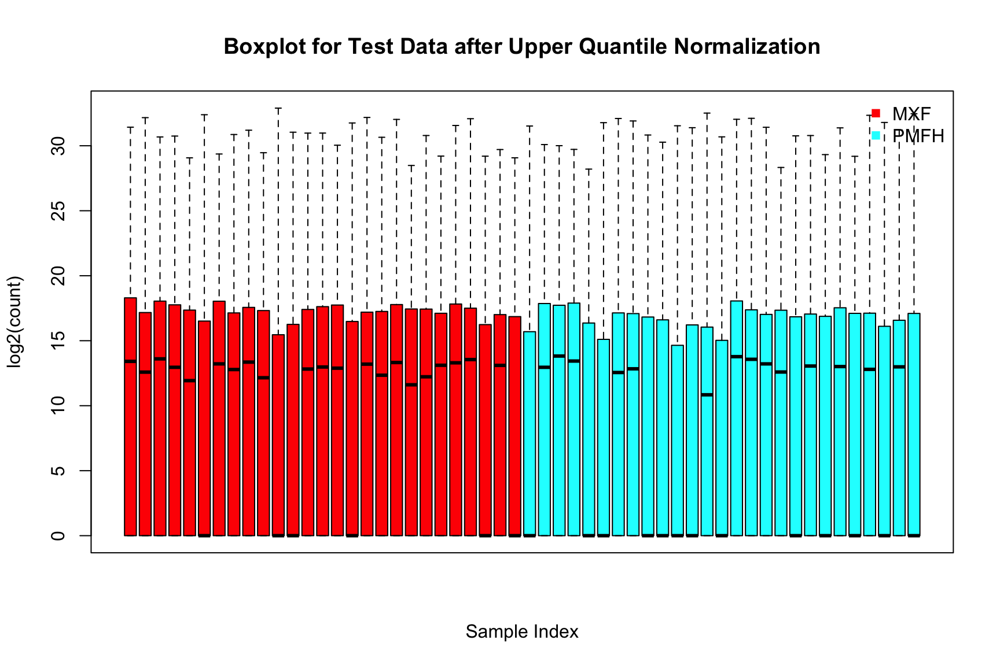
boxplot(log2(test.med + 1)[,colnames(rle.benchmark)], col = c(rep(rainbow(2)[1], 27), rep(rainbow(2)[2], 27)), xlab = "Sample Index", ylab = "log2(count)", outline = FALSE, xaxt = "n", staplewex = 0.5, main = "Boxplot for Test Data after Median Normalization") legend("topright", c("MXF", "PMFH"), bty = "n", pch = 15, cex = 1, col = c(rainbow(2)[1], rainbow(2)[2]))
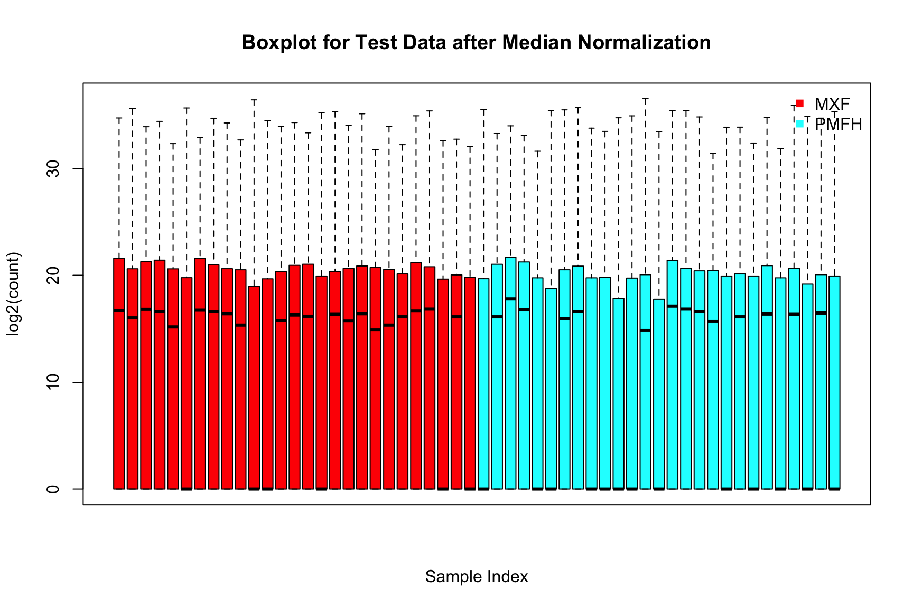
boxplot(log2(test.DESeq + 1)[,colnames(rle.benchmark)], col = c(rep(rainbow(2)[1], 27), rep(rainbow(2)[2], 27)), xlab = "Sample Index", ylab = "log2(count)", outline = FALSE, xaxt = "n", staplewex = 0.5, main = "Boxplot for Test Data after DESeq Normalization") legend("topright", c("MXF", "PMFH"), bty = "n", pch = 15, cex = 1, col = c(rainbow(2)[1], rainbow(2)[2]))
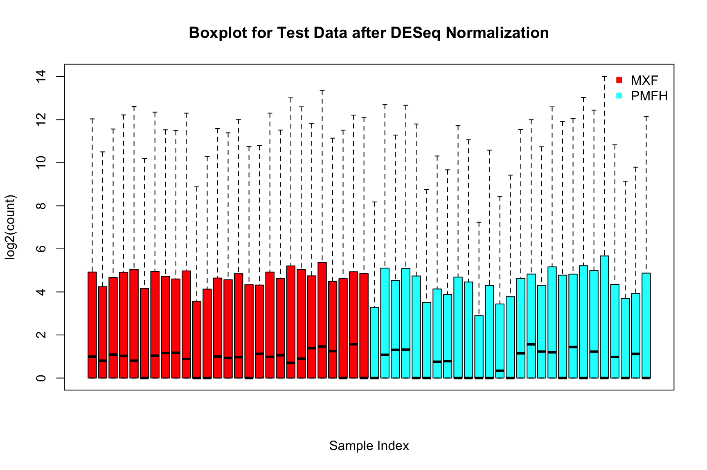
boxplot(log2(test.PoissonSeq + 1)[,colnames(rle.benchmark)], col = c(rep(rainbow(2)[1], 27), rep(rainbow(2)[2], 27)), xlab = "Sample Index", ylab = "log2(count)", outline = FALSE, xaxt = "n", staplewex = 0.5, main = "Boxplot for Test Data after PoissonSeq Normalization") legend("topright", c("MXF", "PMFH"), bty = "n", pch = 15, cex = 1, col = c(rainbow(2)[1], rainbow(2)[2]))
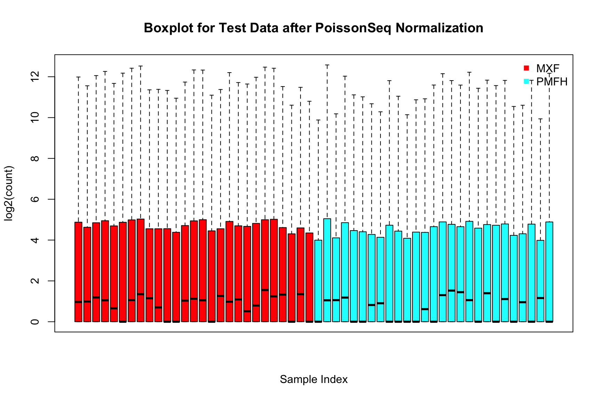
boxplot(log2(test.QN + 1)[,colnames(rle.benchmark)], col = c(rep(rainbow(2)[1], 27), rep(rainbow(2)[2], 27)), xlab = "Sample Index", ylab = "log2(count)", outline = FALSE, xaxt = "n", staplewex = 0.5, main = "Boxplot for Test Data after Quantile Normalization") legend("topright", c("MXF", "PMFH"), bty = "n", pch = 15, cex = 1, col = c(rainbow(2)[1], rainbow(2)[2]))
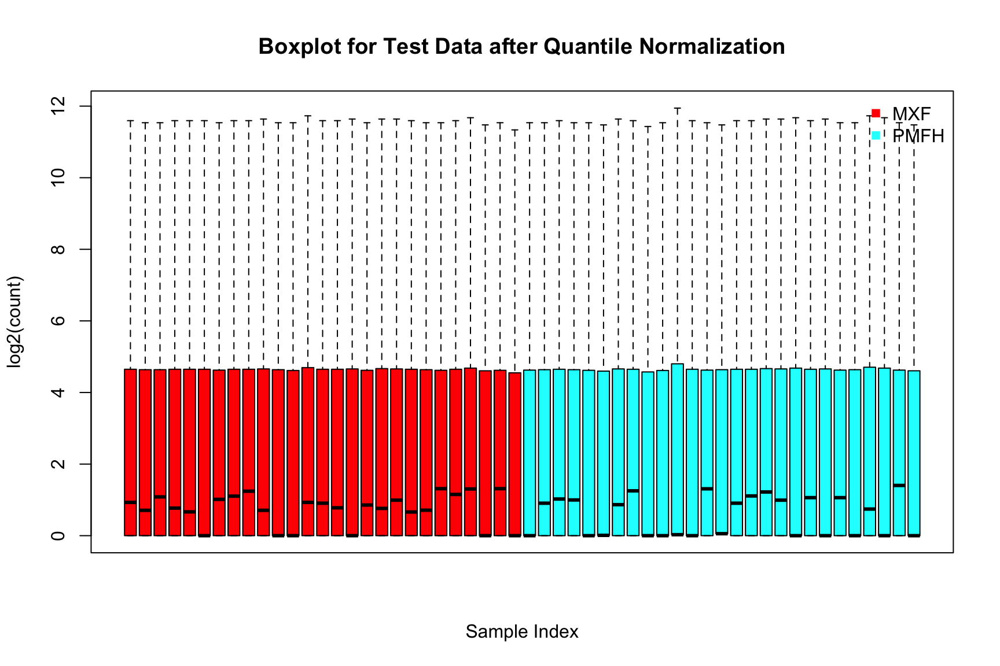
boxplot(log2(test.QN.filter + 1)[,colnames(rle.benchmark)], col = c(rep(rainbow(2)[1], 27), rep(rainbow(2)[2], 27)), xlab = "Sample Index", ylab = "log2(count)", outline = FALSE, xaxt = "n", staplewex = 0.5, main = "Boxplot for Test Data after Quantile Normalization with Filtering") legend("topright", c("MXF", "PMFH"), bty = "n", pch = 15, cex = 1, col = c(rainbow(2)[1], rainbow(2)[2]))
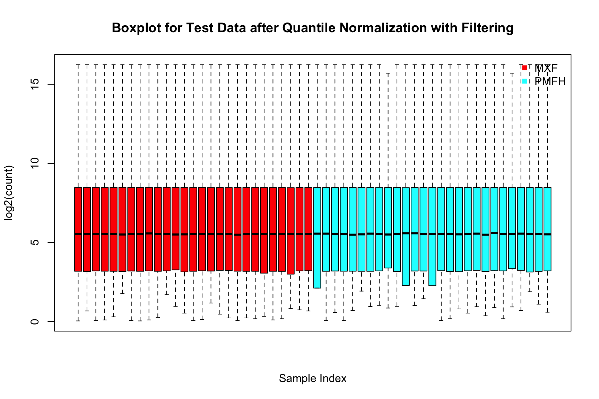
boxplot(log2(test.SVA + 1)[,colnames(rle.benchmark)], col = c(rep(rainbow(2)[1], 27), rep(rainbow(2)[2], 27)), xlab = "Sample Index", ylab = "log2(count)", outline = FALSE, xaxt = "n", staplewex = 0.5, main = "Boxplot for Test Data after SVA Normalization") legend("topright", c("MXF", "PMFH"), bty = "n", pch = 15, cex = 1, col = c(rainbow(2)[1], rainbow(2)[2]))
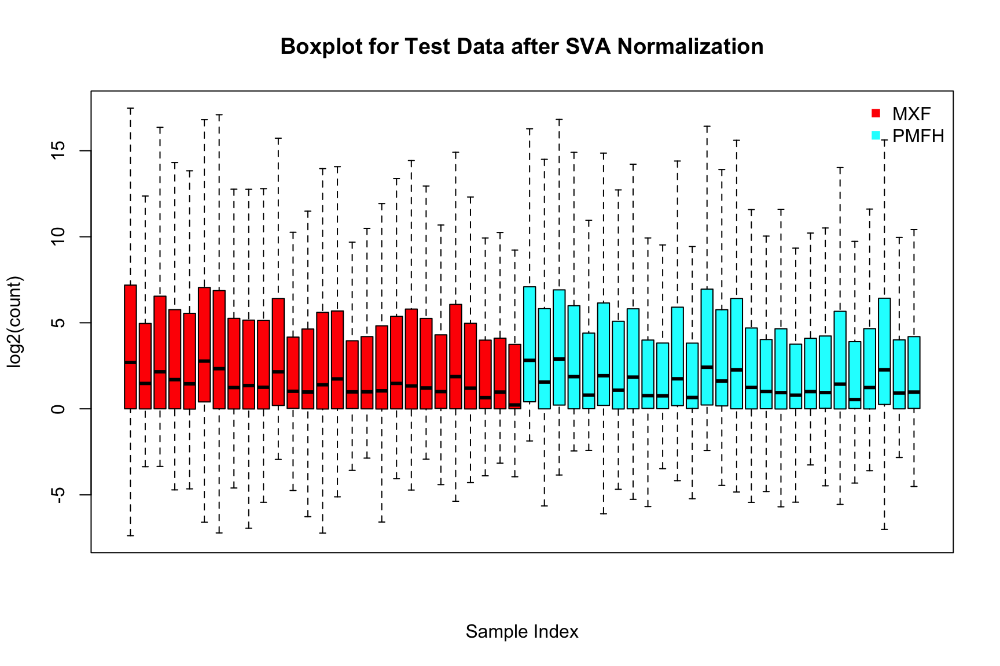
boxplot(log2(test.RUVg + 1)[,colnames(rle.benchmark)], col = c(rep(rainbow(2)[1], 27), rep(rainbow(2)[2], 27)), xlab = "Sample Index", ylab = "log2(count)", outline = FALSE, xaxt = "n", staplewex = 0.5, main = "Boxplot for Test Data after RUVg Normalization") legend("topright", c("MXF", "PMFH"), bty = "n", pch = 15, cex = 1, col = c(rainbow(2)[1], rainbow(2)[2]))
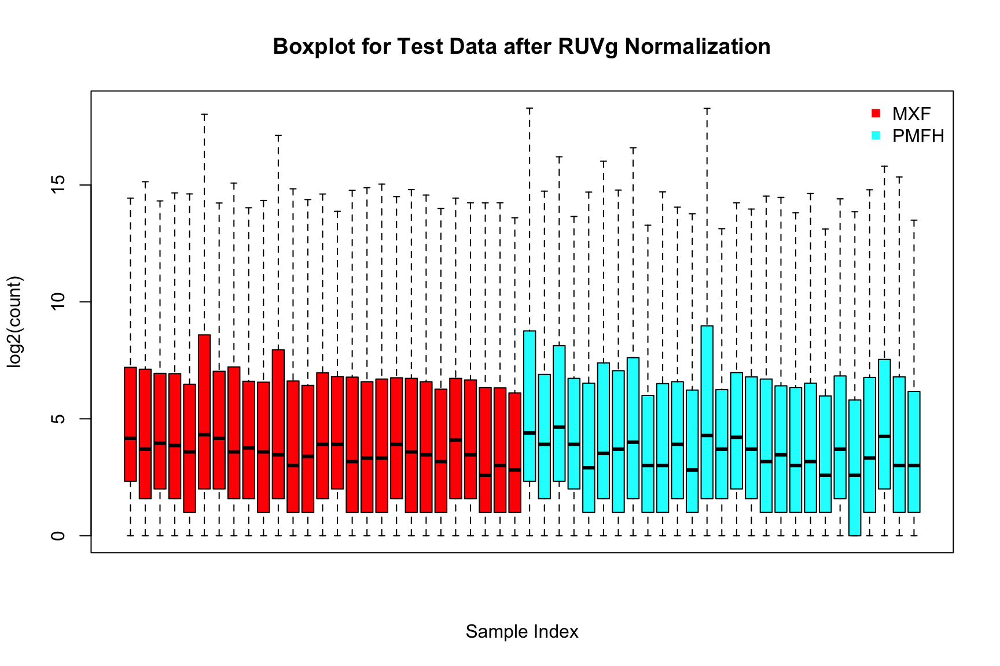
boxplot(log2(test.RUVr + 1)[,colnames(rle.benchmark)], col = c(rep(rainbow(2)[1], 27), rep(rainbow(2)[2], 27)), xlab = "Sample Index", ylab = "log2(count)", outline = FALSE, xaxt = "n", staplewex = 0.5, main = "Boxplot for Test Data after RUVr Normalization") legend("topright", c("MXF", "PMFH"), bty = "n", pch = 15, cex = 1, col = c(rainbow(2)[1], rainbow(2)[2]))
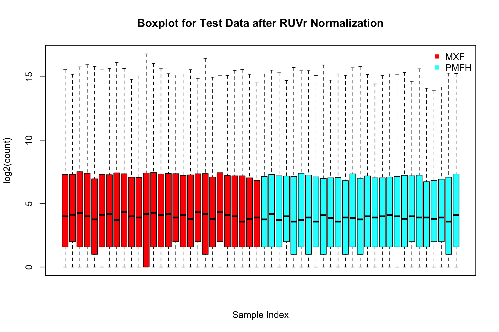
boxplot(log2(test.RUVs + 1)[,colnames(rle.benchmark)], col = c(rep(rainbow(2)[1], 27), rep(rainbow(2)[2], 27)), xlab = "Sample Index", ylab = "log2(count)", outline = FALSE, xaxt = "n", staplewex = 0.5, main = "Boxplot for Test Data after RUVs Normalization") legend("topright", c("MXF", "PMFH"), bty = "n", pch = 15, cex = 1, col = c(rainbow(2)[1], rainbow(2)[2]))
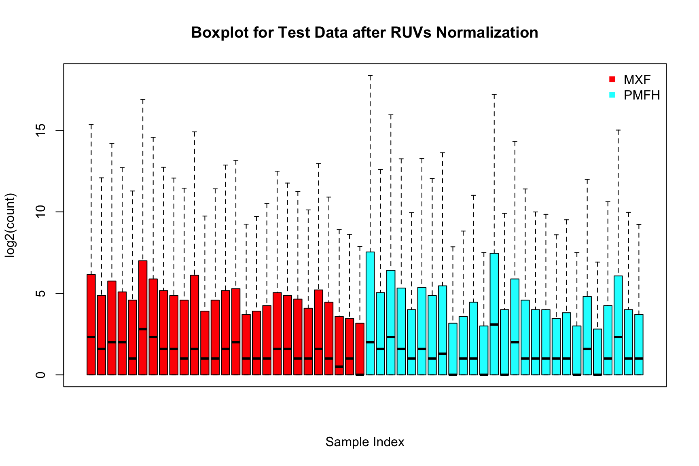
FNR V.S. FDR (Figure 5A)
emp.FNR = c( statistics("norm.none")$FNR, statistics("norm.TMM")$FNR, statistics("norm.TC")$FNR, statistics("norm.UQ")$FNR, statistics("norm.med")$FNR, statistics("norm.DESeq")$FNR, statistics("norm.PoissonSeq")$FNR, statistics("norm.QN")$FNR, statistics("norm.QN", filter = TRUE)$FNR, statistics("norm.SVA")$FNR, statistics("norm.RUV", RUV_method = "RUVg")$FNR, statistics("norm.RUV", RUV_method = "RUVr")$FNR, statistics("norm.RUV", RUV_method = "RUVs")$FNR) #> 328 genes has been filtered because they contains too small number of reads across the experiments.Number of significant surrogate variables is: 1 #> Iteration (out of 5 ):1 2 3 4 5 emp.FDR = c( statistics("norm.none")$FDR, statistics("norm.TMM")$FDR, statistics("norm.TC")$FDR, statistics("norm.UQ")$FDR, statistics("norm.med")$FDR, statistics("norm.DESeq")$FDR, statistics("norm.PoissonSeq")$FDR, statistics("norm.QN")$FDR, statistics("norm.QN", filter = TRUE)$FDR, statistics("norm.SVA")$FDR, statistics("norm.RUV", RUV_method = "RUVg")$FDR, statistics("norm.RUV", RUV_method = "RUVr")$FDR, statistics("norm.RUV", RUV_method = "RUVs")$FDR) #> 328 genes has been filtered because they contains too small number of reads across the experiments.Number of significant surrogate variables is: 1 #> Iteration (out of 5 ):1 2 3 4 5 par(pty = "s", cex = 1.2) plot(emp.FNR, emp.FDR, pch = c(1, rep(4,6), rep(8, 6)), cex = 1, ylim = c(0.38, 0.8), xlim = c(0.38, 0.92), xlab = "False Negative Rate" , ylab = "False Discovery Rate", main = "Scatterplot for Depth Normalization Methods") emp.FDR.loc = emp.FDR + c(0.015, 0, rep(0.015, 7), 0, rep(0.015, 3)) emp.FNR.loc = emp.FNR + c(0, 0.023, rep(0, 7), -0.02, rep(0, 3)) text(emp.FDR.loc ~ emp.FNR.loc, labels = c("No Norm", "TMM", "TC", "UQ", "Med", "DESeq", "PoissonSeq", "QN", "QN with Filtering", "SVA", "RUVg", "RUVr", "RUVs"), data = cbind(emp.FNR, emp.FDR), cex = 0.8, font = 2)
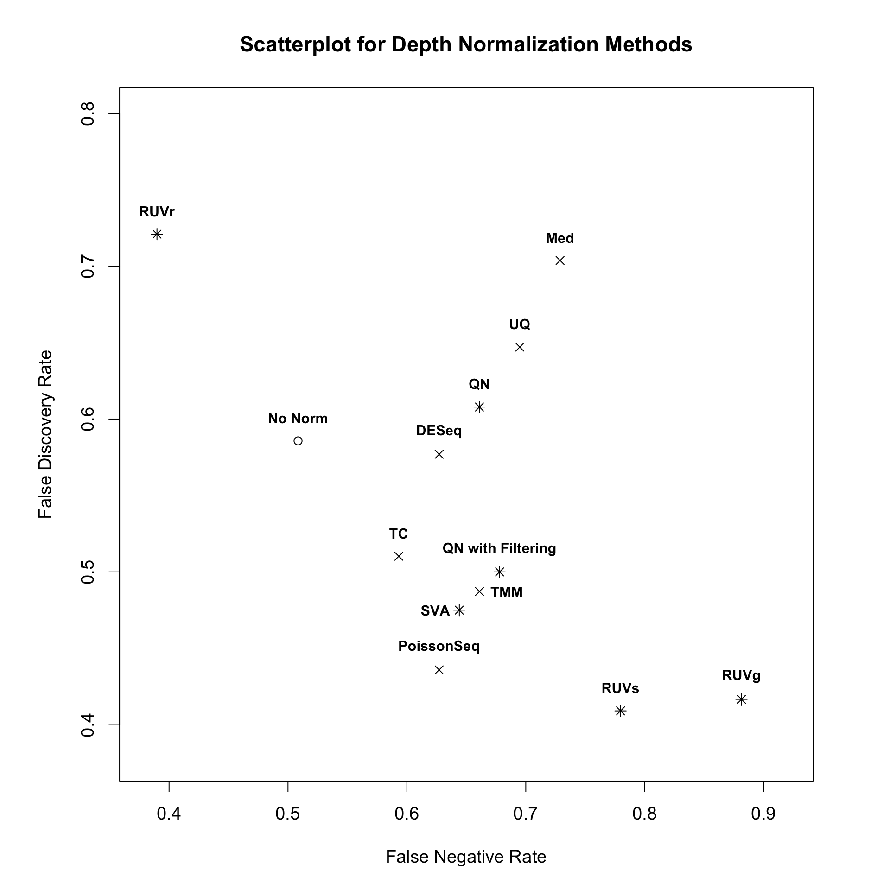
CATplot (Figure 5B)
catplots = vector("list", 7) benchmark.p = DE.voom(benchmark, emp.group)$p.val[,1] catplots[[1]] = CATplot(subp.test$comp.test, benchmark.p, maxrank = 100, make.plot = F) catplots[[2]] = CATplot(subp.TMM$comp.test, benchmark.p, maxrank = 100, make.plot = F) catplots[[3]] = CATplot(subp.TC$comp.test, benchmark.p, maxrank = 100, make.plot = F) catplots[[4]] = CATplot(subp.UQ$comp.test, benchmark.p, maxrank = 100, make.plot = F) catplots[[5]] = CATplot(subp.med$comp.test, benchmark.p, maxrank = 100, make.plot = F) catplots[[6]] = CATplot(subp.DESeq$comp.test, benchmark.p, maxrank = 100, make.plot = F) catplots[[7]] = CATplot(subp.PoissonSeq$comp.test, benchmark.p, maxrank = 100, make.plot = F) color1 = rainbow(7) par(pty = "s", cex = 1.2) plot(catplots[[1]], ylim = c(0, 0.7), col = color1[1], lwd = 2, type = "l", ylab = "Rate of Agreement with Benchmark", xlab = "Significance Rank of MiRNAs", main = "CATplot: Scaling-based Normalization Methods") lines(catplots[[2]], col = color1[2], lwd = 2) lines(catplots[[3]], col = color1[3], lwd = 2) lines(catplots[[4]],col = color1[4], lwd = 2) lines(catplots[[5]],col = color1[5], lwd = 2) lines(catplots[[6]],col = color1[6], lwd = 2) lines(catplots[[7]],col = color1[7], lwd = 2) legend(x = 75, y = 0.2, xpd = TRUE, legend = c("No Norm", "TMM", "TC", "UQ", "Med", "DESeq", "PoissonSeq"), col = color1, lwd = 2)
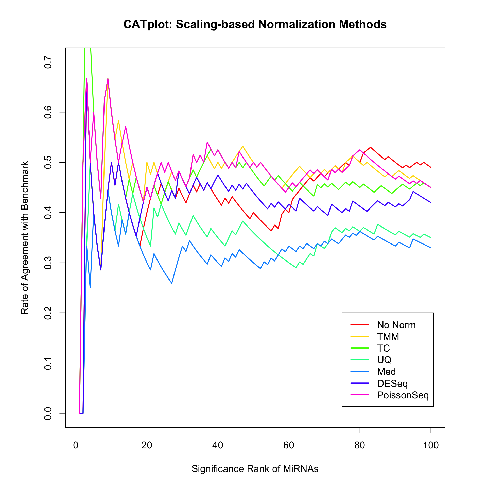
CATplot (Figure 5C)
catplots = vector("list", 7) catplots[[1]] = CATplot(subp.test$comp.test, benchmark.p, maxrank = 100, make.plot = F) catplots[[2]] = CATplot(subp.QN$comp.test, benchmark.p, maxrank = 100, make.plot = F) catplots[[3]] = CATplot(subp.QN.filter$comp.test, benchmark.p, maxrank = 100, make.plot = F) catplots[[4]] = CATplot(subp.SVA$comp.test, benchmark.p, maxrank = 100, make.plot = F) catplots[[5]] = CATplot(subp.RUVg$comp.test, benchmark.p, maxrank = 100, make.plot = F) catplots[[6]] = CATplot(subp.RUVr$comp.test, benchmark.p, maxrank = 100, make.plot = F) catplots[[7]] = CATplot(subp.RUVs$comp.test, benchmark.p, maxrank = 100, make.plot = F) color2 = rainbow(7) par(pty = "s", cex = 1.2) plot(catplots[[1]], ylim = c(0, 0.7), col = color1[1], lwd = 2, type = "l",ylab = "Rate of Agreement with Benchmark", xlab = "Significance Rank of MiRNAs", main = "CATplot: Regression-based Normalization Methods") lines(catplots[[2]],col = color2[2], lwd = 2, lty = 3) lines(catplots[[3]],col = color2[3], lwd = 2, lty = 3) lines(catplots[[4]],col = color2[4], lwd = 2, lty = 3) lines(catplots[[5]],col = color2[5], lwd = 2, lty = 3) lines(catplots[[6]],col = color2[6], lwd = 2, lty = 3) lines(catplots[[7]],col = color2[7], lwd = 2, lty = 3) legend(x = 70, y = 0.2, xpd = TRUE, legend = c("No Norm", "QN", "QN with Filtering", "SVA", "RUVg", "RUVr", "RUVs"), col = c(color1[1], color2[2:7]), lwd = 2, lty=c(1, rep(3,6)))
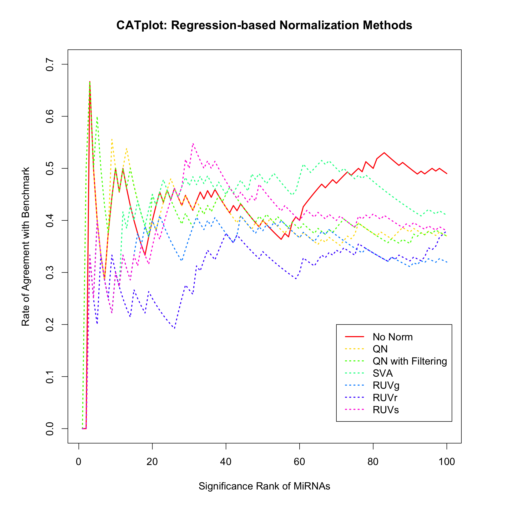
Dendrograms for P-value Clustering (Figure 5D)
pval.index = rownames(benchmark) pval.complete = cbind(NoNorm = subp.test$comp.test[pval.index], TMM = subp.TMM$comp.test[pval.index], TC = subp.TC$comp.test[pval.index], UQ = subp.UQ$comp.test[pval.index], MED = subp.med$comp.test[pval.index], DESeq = subp.DESeq$comp.test[pval.index], PoissonSeq = subp.PoissonSeq$comp.test[pval.index], QN = subp.QN$comp.test[pval.index], QNwithFiltering = subp.QN.filter$comp.test[pval.index], SVA = subp.SVA$comp.test[pval.index], RUVg = subp.RUVg$comp.test[pval.index], RUVr = subp.RUVr$comp.test[pval.index], RUVs = subp.RUVs$comp.test[pval.index]) dendrogram.p = t(-log10(pval.complete)) hc = hclust(dist(dendrogram.p), method = "ward.D") plot(as.dendrogram(hc), main = "Dendrogram for Depth Normalization Methods")
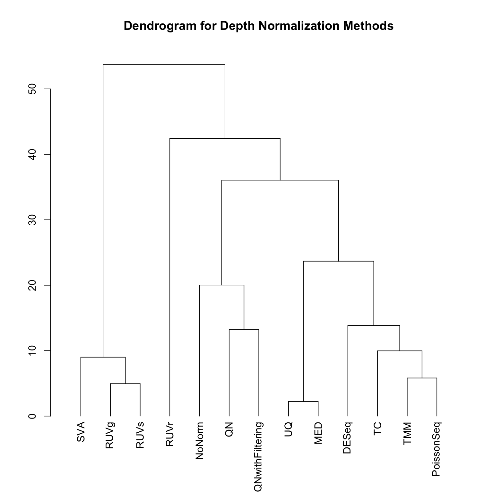
Depth Normalization Methods Evaluation Using edgeR
FNR V.S. FDR (Figure S5A)
statistics.edgeR = function(method, RUV_method = NULL, filter = FALSE) { edgeR.test = norm.edgeR.pip(raw = test, groups = emp.group, method = method, RUV_method = RUV_method, filter = filter) edgeR.bench = DE.voom(RC = benchmark, groups = emp.group, P = 0.01) stat.DE = matrix(, nrow = 1033, ncol = 2) rownames(stat.DE) = rownames(benchmark) colnames(stat.DE) = c("Benchmark", "NormTest") stat.DE[edgeR.bench$id.list, 1] = "DE" stat.DE[edgeR.test$id.list, 2] = "DE" stat.DE[is.na(stat.DE)] = "non-DE" t = table(prediction = stat.DE[,2], truth = stat.DE[,1]) return(list(table = t, TPR = t[1,1]/sum(t[,1]), FPR = t[1,2]/sum(t[,2]), FDR = t[1,2]/sum(t[1,]), FNR = t[2,1]/sum(t[,1]))) } emp.FNR = c( statistics.edgeR("norm.none")$FNR, statistics.edgeR("norm.TMM")$FNR, statistics.edgeR("norm.TC")$FNR, statistics.edgeR("norm.UQ")$FNR, statistics.edgeR("norm.med")$FNR, statistics.edgeR("norm.DESeq")$FNR, statistics.edgeR("norm.PoissonSeq")$FNR, statistics.edgeR("norm.QN")$FNR, statistics.edgeR("norm.QN", filter = TRUE)$FNR, statistics.edgeR("norm.SVA")$FNR, statistics.edgeR("norm.RUV", RUV_method = "RUVg")$FNR, statistics.edgeR("norm.RUV", RUV_method = "RUVr")$FNR, statistics.edgeR("norm.RUV", RUV_method = "RUVs")$FNR) #> 328 genes has been filtered because they contains too small number of reads across the experiments.Number of significant surrogate variables is: 1 #> Iteration (out of 5 ):1 2 3 4 5 emp.FDR = c( statistics.edgeR("norm.none")$FDR, statistics.edgeR("norm.TMM")$FDR, statistics.edgeR("norm.TC")$FDR, statistics.edgeR("norm.UQ")$FDR, statistics.edgeR("norm.med")$FDR, statistics.edgeR("norm.DESeq")$FDR, statistics.edgeR("norm.PoissonSeq")$FDR, statistics.edgeR("norm.QN")$FDR, statistics.edgeR("norm.QN", filter = TRUE)$FDR, statistics.edgeR("norm.SVA")$FDR, statistics.edgeR("norm.RUV", RUV_method = "RUVg")$FDR, statistics.edgeR("norm.RUV", RUV_method = "RUVr")$FDR, statistics.edgeR("norm.RUV", RUV_method = "RUVs")$FDR) #> 328 genes has been filtered because they contains too small number of reads across the experiments.Number of significant surrogate variables is: 1 #> Iteration (out of 5 ):1 2 3 4 5 par(pty = "s", cex = 1.2) plot(emp.FNR, emp.FDR, pch = c(1, rep(4,6), rep(8, 6)), cex = 1, ylim = c(0.38, 0.9), xlim = c(0.47, 0.90), xlab = "False Negative Rate" , ylab = "False Discovery Rate", main = "Scatterplot of Depth Normalization Methods") emp.FDR.loc = emp.FDR + c(0.015, 0, -0.015,-0.02,0.02,0.015, 0,0.015,0.015,0.01, 0,0.02, 0) emp.FNR.loc = emp.FNR + c( 0.01, 0.02, 0, 0, 0, 0.03,-0.07, 0, 0, 0, 0.03, 0,-0.03) text(emp.FDR.loc ~ emp.FNR.loc, labels = c("NoNorm", "TMM", "TC", "UQ", "Med", "DESeq", "PoissonSeq", "QN", "QN with Filtering", "SVA", "RUVg", "RUVr", "RUVs"), data = cbind(emp.FNR, emp.FDR), cex = 0.8, font = 2)
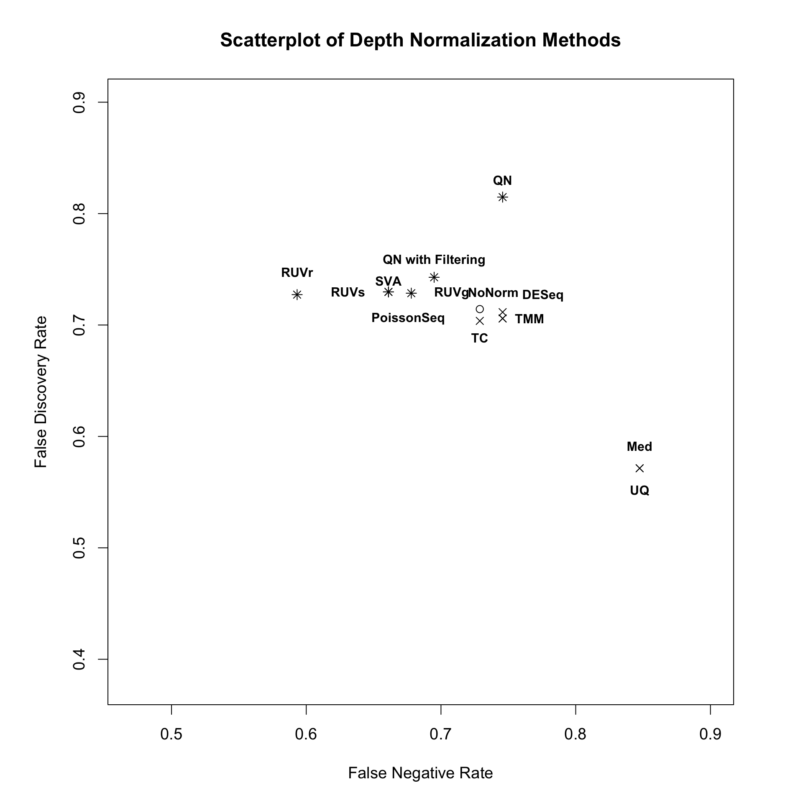
CATplot (Figure S5BC)
p.test = norm.edgeR.pip(test, emp.group, method = "norm.none")$p.val p.test.val = p.test[,1]; names(p.test.val) = rownames(p.test) p.TMM = norm.edgeR.pip(test, emp.group, method = "norm.TMM")$p.val p.TMM.val = p.TMM[,1]; names(p.TMM.val) = rownames(p.TMM) p.TC = norm.edgeR.pip(test, emp.group, method = "norm.TC")$p.val p.TC.val = p.TC[,1]; names(p.TC.val) = rownames(p.TC) p.UQ = norm.edgeR.pip(test, emp.group, method = "norm.UQ")$p.val p.UQ.val = p.UQ[,1]; names(p.UQ.val) = rownames(p.UQ) p.med = norm.edgeR.pip(test, emp.group, method = "norm.med")$p.val p.med.val = p.med[,1]; names(p.med.val) = rownames(p.med) p.DESeq = norm.edgeR.pip(test, emp.group, method = "norm.DESeq")$p.val p.DESeq.val = p.DESeq[,1]; names(p.DESeq.val) = rownames(p.DESeq) p.PoissonSeq = norm.edgeR.pip(test, emp.group, method = "norm.PoissonSeq")$p.val #> 328 genes has been filtered because they contains too small number of reads across the experiments. p.PoissonSeq.val = p.PoissonSeq[,1]; names(p.PoissonSeq.val) = rownames(p.PoissonSeq) p.QN = norm.edgeR.pip(test, emp.group, method = "norm.QN")$p.val p.QN.val = p.QN[,1]; names(p.QN.val) = rownames(p.QN) p.QN.filter = norm.edgeR.pip(test, emp.group, method = "norm.QN", filter = TRUE)$p.val p.QN.filter.val = p.QN.filter[,1]; names(p.QN.filter.val) = rownames(p.QN.filter) p.SVA = norm.edgeR.pip(test, emp.group, method = "norm.SVA")$p.val #> Number of significant surrogate variables is: 1 #> Iteration (out of 5 ):1 2 3 4 5 p.SVA.val = p.SVA[,1]; names(p.SVA.val) = rownames(p.SVA) p.RUVg = norm.edgeR.pip(test, emp.group, method = "norm.RUV", RUV_method = "RUVg")$p.val p.RUVg.val = p.RUVg[,1]; names(p.RUVg.val) = rownames(p.RUVg) p.RUVr = norm.edgeR.pip(test, emp.group, method = "norm.RUV", RUV_method = "RUVr")$p.val p.RUVr.val = p.RUVr[,1]; names(p.RUVr.val) = rownames(p.RUVr) p.RUVs = norm.edgeR.pip(test, emp.group, method = "norm.RUV", RUV_method = "RUVs")$p.val p.RUVs.val = p.RUVs[,1]; names(p.RUVs.val) = rownames(p.RUVs) catplots = vector("list", 7) benchmark.p = DE.edgeR(benchmark, emp.group)$p.val[,1] names(benchmark.p) = rownames(DE.edgeR(benchmark, emp.group)$p.val) catplots[[1]] = CATplot(p.test.val, benchmark.p, maxrank = 100, make.plot = F) catplots[[2]] = CATplot(p.TMM.val, benchmark.p, maxrank = 100, make.plot = F) catplots[[3]] = CATplot(p.TC.val, benchmark.p, maxrank = 100, make.plot = F) catplots[[4]] = CATplot(p.UQ.val, benchmark.p, maxrank = 100, make.plot = F) catplots[[5]] = CATplot(p.med.val, benchmark.p, maxrank = 100, make.plot = F) catplots[[6]] = CATplot(p.DESeq.val, benchmark.p, maxrank = 100, make.plot = F) catplots[[7]] = CATplot(p.PoissonSeq.val, benchmark.p, maxrank = 100, make.plot = F) color1 = rainbow(7) par(pty = "s", cex = 1.2) plot(catplots[[1]], ylim = c(0, 0.7), col = color1[1], lwd = 2, type = "l", ylab = "Rate of Agreement with Benchmark", xlab = "Significance Rank of MiRNAs", main = "CATplot: Scaling-based Normalization Methods") lines(catplots[[2]], col = color1[2], lwd = 2) lines(catplots[[3]], col = color1[3], lwd = 2) lines(catplots[[4]],col = color1[4], lwd = 2) lines(catplots[[5]],col = color1[5], lwd = 2) lines(catplots[[6]],col = color1[6], lwd = 2) lines(catplots[[7]],col = color1[7], lwd = 2) legend(x = 75, y = 0.2, xpd = TRUE, legend = c("No Norm", "TMM", "TC", "UQ", "Med", "DESeq", "PoissonSeq"), col = color1, lwd = 2)
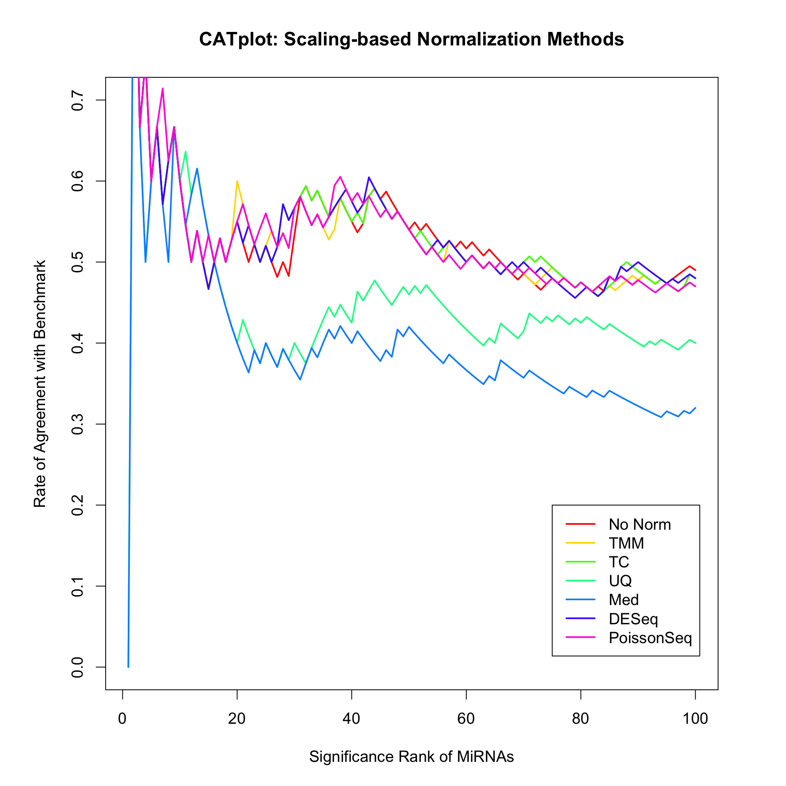
catplots = vector("list", 7) catplots[[1]] = CATplot(p.test.val, benchmark.p, maxrank = 100, make.plot = F) catplots[[2]] = CATplot(p.QN.val, benchmark.p, maxrank = 100, make.plot = F) catplots[[3]] = CATplot(p.QN.filter.val, benchmark.p, maxrank = 100, make.plot = F) catplots[[4]] = CATplot(p.SVA.val, benchmark.p, maxrank = 100, make.plot = F) catplots[[5]] = CATplot(p.RUVg.val, benchmark.p, maxrank = 100, make.plot = F) catplots[[6]] = CATplot(p.RUVr.val, benchmark.p, maxrank = 100, make.plot = F) catplots[[7]] = CATplot(p.RUVs.val, benchmark.p, maxrank = 100, make.plot = F) color2 = rainbow(7) par(pty = "s", cex = 1.2) plot(catplots[[1]], ylim = c(0, 0.7), col = color1[1], lwd = 2, type = "l",ylab = "Rate of Agreement with Benchmark", xlab = "Significance Rank of MiRNAs", main = "CATplot: Regression-based Normalization Methods") lines(catplots[[2]],col = color2[2], lwd = 2, lty = 3) lines(catplots[[3]],col = color2[3], lwd = 2, lty = 3) lines(catplots[[4]],col = color2[4], lwd = 2, lty = 3) lines(catplots[[5]],col = color2[5], lwd = 2, lty = 3) lines(catplots[[6]],col = color2[6], lwd = 2, lty = 3) lines(catplots[[7]],col = color2[7], lwd = 2, lty = 3) legend(x = 70, y = 0.2, xpd = TRUE, legend = c("No Norm", "QN", "QN with Filtering", "SVA", "RUVg", "RUVr", "RUVs"), col = c(color1[1], color2[2:7]), lwd = 2, lty = c(1, rep(3,6)))
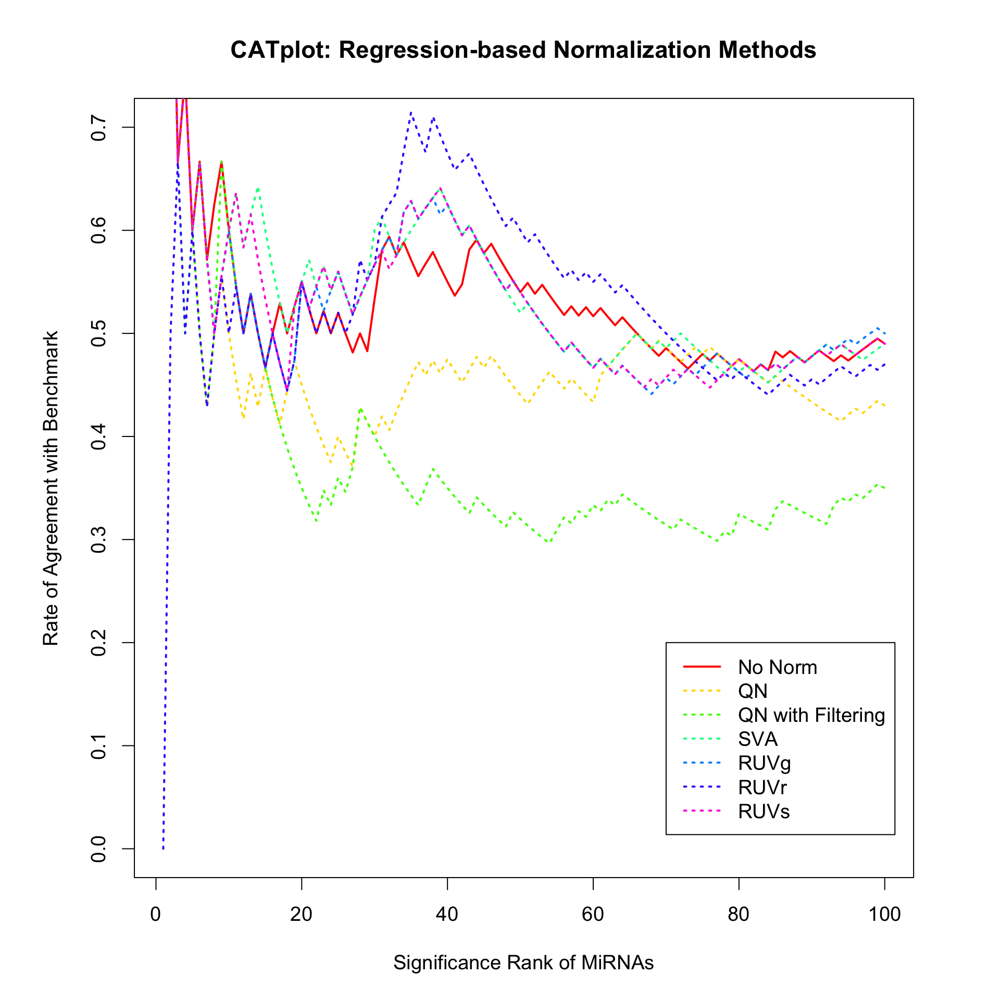
Dendrogram for P-value Clustering (Figure S5D)
pval.edgeR.complete = cbind(NoNorm = p.test.val[pval.index], TMM = p.TMM.val[pval.index], TC = p.TC.val[pval.index], UQ = p.UQ.val[pval.index], MED = p.med.val[pval.index], DESeq = p.DESeq.val[pval.index], PoissonSeq = p.PoissonSeq.val[pval.index], QN = p.QN.val[pval.index], QNwithFiltering = p.QN.filter.val[pval.index], SVA = p.SVA.val[pval.index], RUVg = p.RUVg.val[pval.index], RUVr = p.RUVr.val[pval.index], RUVs = p.RUVs.val[pval.index]) dendrogram.p = t(-log10(pval.edgeR.complete)) hc = hclust(dist(dendrogram.p), method = "ward.D") plot(as.dendrogram(hc), main = "Dendrogram for Depth Normalization Methods")
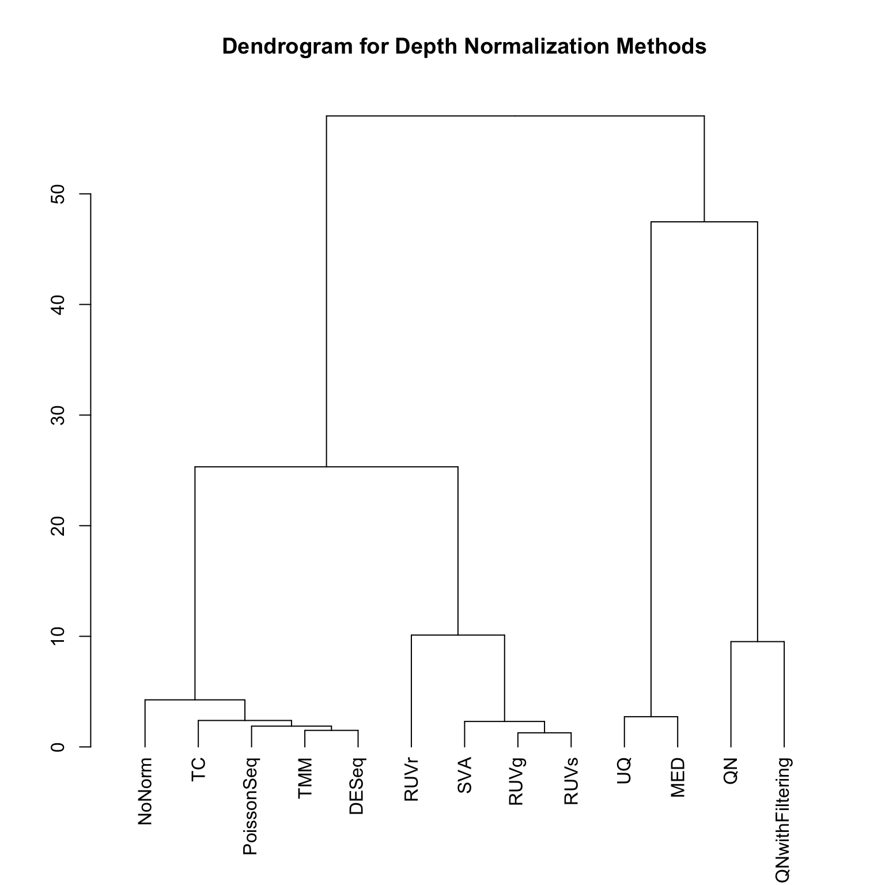
Simulation Study
set.seed(7) colnames(benchmark) = sub(".*_", "", colnames(benchmark)) colnames(test) = colnames(benchmark) simulation = read_csv("../PaperData/simulation.csv") sim.groups = c(rep('MXF',27),rep('PMFH',27)) ## Scenario 1: DE = 2% (1.75% - 2.25%), median mean-diff = (-0.5, 0.5) s1 = simulation %>% filter(proportion > 0.0175 & proportion < 0.0225) %>% filter(median > -0.5 & median < 0.5) s1 = as.matrix(s1[sample(701, 100), 1:54]) ## Scenario 2: DE = 2% (1% - 3%), median mean-diff = (2, 4) s2 = simulation %>% filter(proportion > 0.01 & proportion < 0.03) %>% filter(median > 2 & median < 4) s2 = as.matrix(s2[sample(134, 100), 1:54]) ## Scenario 3: DE = 10% (7% - 13%), median mean-diff = (2, 4) s3 = simulation %>% filter(proportion > 0.07 & proportion < 0.13) %>% filter(median > 2 & median < 4) s3 = as.matrix(s3[sample(102, 100), 1:54]) ## Scenario 4: DE = 20% (15% - 25%), median mean-diff = (2, 4) s4 = simulation %>% filter(proportion > 0.15 & proportion < 0.25) %>% filter(median > 2 & median < 4) s4 = as.matrix(s4[sample(119, 100), 1:54]) summary.plot = function(simulation.plan, method, groups, RUV_method = NULL, filter = FALSE) { FNR = FDR = conc = c() for (i in 1:nrow(simulation.plan)) { benchmark.simu = benchmark[, simulation.plan[i, ]] test.simu = test[, simulation.plan[i, ]] t = subsetp.concordance(benchmark.simu, test.simu, groups = groups, method = method, RUV_method = RUV_method, filter = filter) TP = sum(t$sig.test %in% t$sig.benchmark) FP = length(t$sig.test) - TP FN = length(t$sig.benchmark) - TP TN = nrow(benchmark.simu) - length(t$sig.benchmark) - FP FNR = c(FNR, FN/(FN + TP)) FDR = c(FDR, FP/(FP + TP)) conc = c(conc, t$conc) } return(list(FNR = FNR, FDR = FDR, conc = conc)) }
Boxplot: FNR and FDR (Figure 6)
summary.plot.scenario = function(s){ sum.none = summary.plot(s, "norm.none", sim.groups) sum.TMM = summary.plot(s, "norm.TMM", sim.groups) sum.TC = summary.plot(s, "norm.TC", sim.groups) sum.UQ = summary.plot(s, "norm.UQ", sim.groups) sum.med = summary.plot(s, "norm.med", sim.groups) sum.DESeq = summary.plot(s, "norm.DESeq", sim.groups) sum.PoissonSeq = summary.plot(s, "norm.PoissonSeq", sim.groups) sum.QN = summary.plot(s, "norm.QN", sim.groups) sum.QN.filter = summary.plot(s, "norm.QN", sim.groups, filter = TRUE) sum.SVA = summary.plot(s, "norm.SVA", sim.groups) sum.RUVg = summary.plot(s, "norm.RUV", sim.groups, "RUVg") sum.RUVr = summary.plot(s, "norm.RUV", sim.groups, "RUVr") sum.RUVs = summary.plot(s, "norm.RUV", sim.groups, "RUVs") return(list(none.FDR = sum.none$FDR, TMM.FDR = sum.TMM$FDR, TC.FDR = sum.TC$FDR, UQ.FDR = sum.UQ$FDR, med.FDR = sum.med$FDR, DESeq.FDR = sum.DESeq$FDR, PoissonSeq.FDR = sum.PoissonSeq$FDR, QN.FDR = sum.QN$FDR, QN.filter.FDR = sum.QN.filter$FDR, SVA.FDR = sum.SVA$FDR, RUVg.FDR = sum.RUVg$FDR, RUVr.FDR = sum.RUVr$FDR, RUVs.FDR = sum.RUVs$FDR, none.FNR = sum.none$FNR, TMM.FNR = sum.TMM$FNR, TC.FNR = sum.TC$FNR, UQ.FNR = sum.UQ$FNR, med.FNR = sum.med$FNR, DESeq.FNR = sum.DESeq$FNR, PoissonSeq.FNR = sum.PoissonSeq$FNR, QN.FNR = sum.QN$FNR, QN.filter.FNR = sum.QN.filter$FNR, SVA.FNR = sum.SVA$FNR, RUVg.FNR = sum.RUVg$FNR, RUVr.FNR = sum.RUVr$FNR, RUVs.FNR = sum.RUVs$FNR)) } boxplot.FDFN = function(s, main){ s = summary.plot.scenario(s) par(mar = c(8, 3, 3, 3), cex = 0.9) boxplot(s$none.FDR, s$none.FNR, s$TC.FDR, s$TC.FNR, s$UQ.FDR, s$UQ.FNR, s$med.FDR, s$med.FNR, s$DESeq.FDR, s$DESeq.FNR, s$PoissonSeq.FDR, s$PoissonSeq.FNR, s$TMM.FDR, s$TMM.FNR, s$QN.FDR, s$QN.FNR, s$QN.filter.FDR, s$QN.filter.FNR, s$SVA.FDR, s$SVA.FNR, s$RUVg.FDR, s$RUVg.FNR, s$RUVs.FDR, s$RUVs.FNR, s$RUVr.FDR, s$RUVr.FNR, at = c(1,2,4,5,7,8,10,11,13,14,16,17,19,20,22,23,25,26,28,29,31,32,34,35,37,38), las = 2, ylab = "Log2 Count", pch = 16, cex = 0.5, col = c("white", "grey"), main = main) axis(1, at = c(1.5, 4.5, 7.5, 10.5, 13.5, 16.5, 19.5, 22.5, 25.5, 28.5, 31.5, 34.5, 37.5), labels = c("No Norm", "TC", "UQ", "Med", "DESeq", "PoissonSeq", "TMM", "QN", "QN with Filtering", "SVA", "RUVg", "RUVs", "RUVr"), las = 2, tck = 0) legend("bottomleft",c("False Discovery Rate", "False Negative Rate"), bty = "n", pch = c(0, 15), cex = 1, col = c("grey", "grey")) } boxplot.FDFN(s1, main = "Scenario 1: DE = 2%, median of group mean differences = 0")
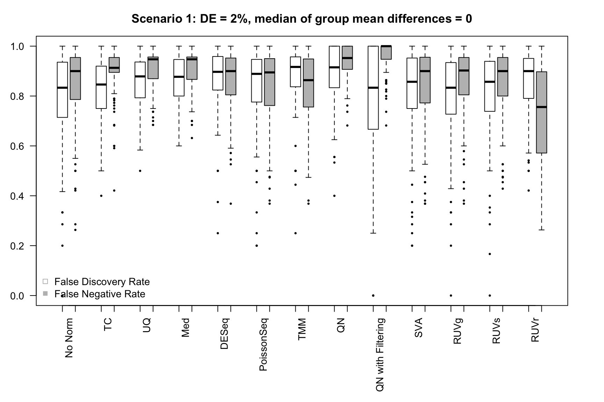
boxplot.FDFN(s2, main = "Scenario 2: DE = 2%, median of group mean differences = 3")
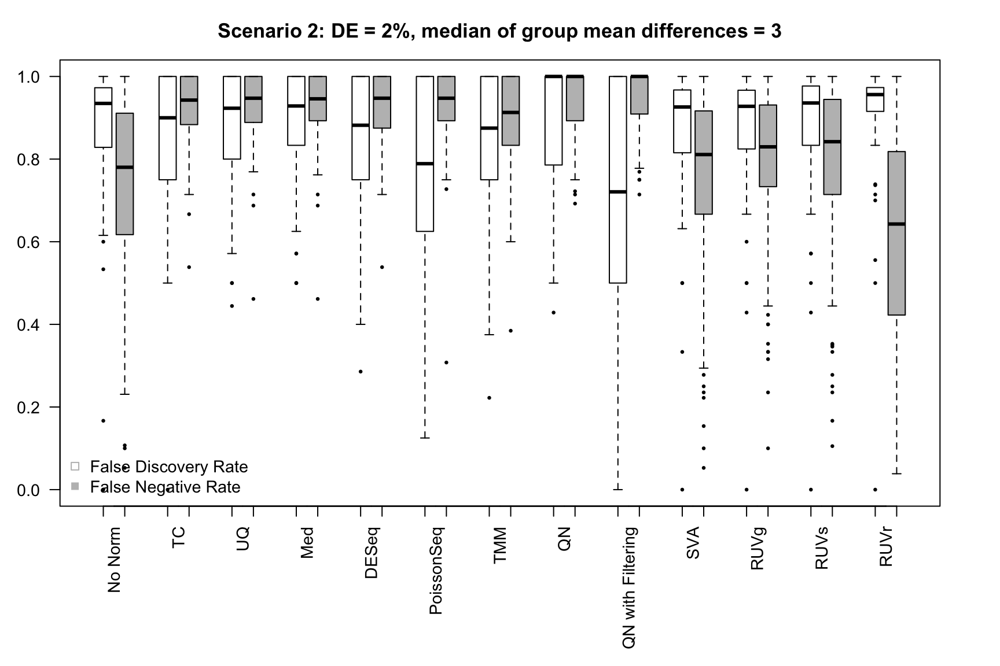
boxplot.FDFN(s3, main = "Scenario 3: DE = 10%, median of group mean differences = 3")
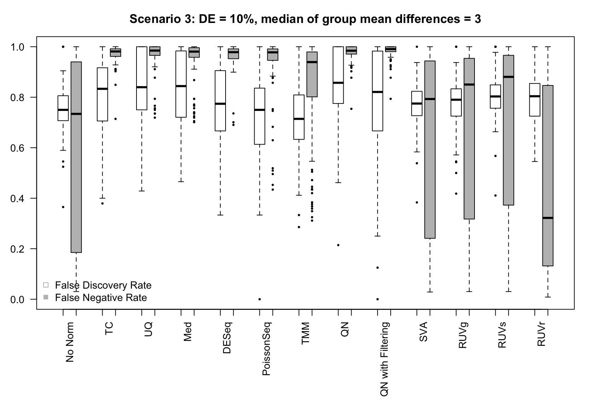
boxplot.FDFN(s4, main = "Scenario 4: DE = 20%, median of group mean differences = 3")
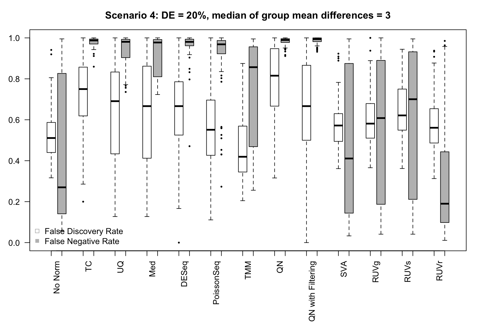
Package Information
sessionInfo() #> R version 4.0.2 (2020-06-22) #> Platform: x86_64-apple-darwin17.0 (64-bit) #> Running under: macOS Catalina 10.15.5 #> #> Matrix products: default #> BLAS: /Library/Frameworks/R.framework/Versions/4.0/Resources/lib/libRblas.dylib #> LAPACK: /Library/Frameworks/R.framework/Versions/4.0/Resources/lib/libRlapack.dylib #> #> locale: #> [1] en_US.UTF-8/en_US.UTF-8/en_US.UTF-8/C/en_US.UTF-8/en_US.UTF-8 #> #> attached base packages: #> [1] stats4 splines parallel stats graphics grDevices utils #> [8] datasets methods base #> #> other attached packages: #> [1] ffpe_1.32.0 TTR_0.23-6 #> [3] preprocessCore_1.50.0 ape_5.4 #> [5] RUVSeq_1.22.0 EDASeq_2.22.0 #> [7] ShortRead_1.46.0 GenomicAlignments_1.24.0 #> [9] SummarizedExperiment_1.18.2 DelayedArray_0.14.0 #> [11] matrixStats_0.56.0 Rsamtools_2.4.0 #> [13] GenomicRanges_1.40.0 GenomeInfoDb_1.24.2 #> [15] Biostrings_2.56.0 XVector_0.28.0 #> [17] IRanges_2.22.2 S4Vectors_0.26.1 #> [19] sva_3.36.0 BiocParallel_1.22.0 #> [21] genefilter_1.70.0 mgcv_1.8-31 #> [23] nlme_3.1-148 affy_1.66.0 #> [25] PoissonSeq_1.1.2 combinat_0.0-8 #> [27] edgeR_3.30.3 limma_3.44.3 #> [29] DESeq_1.39.0 lattice_0.20-41 #> [31] locfit_1.5-9.4 Biobase_2.48.0 #> [33] BiocGenerics_0.34.0 DescTools_0.99.36 #> [35] forcats_0.5.0 stringr_1.4.0 #> [37] dplyr_1.0.0 purrr_0.3.4 #> [39] readr_1.3.1 tidyr_1.1.0 #> [41] tibble_3.0.3 ggplot2_3.3.2 #> [43] tidyverse_1.3.0 #> #> loaded via a namespace (and not attached): #> [1] readxl_1.3.1 backports_1.1.8 #> [3] aroma.light_3.18.0 BiocFileCache_1.12.0 #> [5] plyr_1.8.6 digest_0.6.25 #> [7] foreach_1.5.0 htmltools_0.5.0 #> [9] fansi_0.4.1 magrittr_1.5 #> [11] memoise_1.1.0 sfsmisc_1.1-7 #> [13] annotate_1.66.0 modelr_0.1.8 #> [15] R.utils_2.9.2 xts_0.12-0 #> [17] siggenes_1.62.0 askpass_1.1 #> [19] pkgdown_1.5.1 prettyunits_1.1.1 #> [21] jpeg_0.1-8.1 colorspace_1.4-1 #> [23] blob_1.2.1 rvest_0.3.5 #> [25] rappdirs_0.3.1 haven_2.3.1 #> [27] xfun_0.15 crayon_1.3.4 #> [29] RCurl_1.98-1.2 jsonlite_1.7.0 #> [31] GEOquery_2.56.0 iterators_1.0.12 #> [33] survival_3.2-3 zoo_1.8-8 #> [35] glue_1.4.1 gtable_0.3.0 #> [37] lumi_2.40.0 zlibbioc_1.34.0 #> [39] Rhdf5lib_1.10.1 HDF5Array_1.16.1 #> [41] scales_1.1.1 mvtnorm_1.1-1 #> [43] rngtools_1.5 DBI_1.1.0 #> [45] Rcpp_1.0.5 xtable_1.8-4 #> [47] progress_1.2.2 bumphunter_1.30.0 #> [49] mclust_5.4.6 bit_1.1-15.2 #> [51] httr_1.4.1 RColorBrewer_1.1-2 #> [53] ellipsis_0.3.1 reshape_0.8.8 #> [55] pkgconfig_2.0.3 XML_3.99-0.4 #> [57] R.methodsS3_1.8.0 dbplyr_1.4.4 #> [59] tidyselect_1.1.0 rlang_0.4.7 #> [61] AnnotationDbi_1.50.1 munsell_0.5.0 #> [63] cellranger_1.1.0 tools_4.0.2 #> [65] cli_2.0.2 generics_0.0.2 #> [67] RSQLite_2.2.0 broom_0.7.0 #> [69] evaluate_0.14 yaml_2.2.1 #> [71] knitr_1.29 bit64_0.9-7 #> [73] fs_1.4.2 beanplot_1.2 #> [75] scrime_1.3.5 methylumi_2.34.0 #> [77] doRNG_1.8.2 nor1mix_1.3-0 #> [79] R.oo_1.23.0 xml2_1.3.2 #> [81] biomaRt_2.44.1 compiler_4.0.2 #> [83] rstudioapi_0.11 curl_4.3 #> [85] png_0.1-7 affyio_1.58.0 #> [87] reprex_0.3.0 geneplotter_1.66.0 #> [89] stringi_1.4.6 minfi_1.34.0 #> [91] GenomicFeatures_1.40.1 desc_1.2.0 #> [93] Matrix_1.2-18 multtest_2.44.0 #> [95] vctrs_0.3.1 pillar_1.4.6 #> [97] lifecycle_0.2.0 BiocManager_1.30.10 #> [99] data.table_1.12.8 bitops_1.0-6 #> [101] rtracklayer_1.48.0 R6_2.4.1 #> [103] latticeExtra_0.6-29 hwriter_1.3.2 #> [105] KernSmooth_2.23-17 nleqslv_3.3.2 #> [107] codetools_0.2-16 boot_1.3-25 #> [109] MASS_7.3-51.6 assertthat_0.2.1 #> [111] rhdf5_2.32.2 openssl_1.4.2 #> [113] rprojroot_1.3-2 withr_2.2.0 #> [115] GenomeInfoDbData_1.2.3 expm_0.999-4 #> [117] hms_0.5.3 quadprog_1.5-8 #> [119] grid_4.0.2 base64_2.0 #> [121] DelayedMatrixStats_1.10.1 rmarkdown_2.3 #> [123] illuminaio_0.30.0 lubridate_1.7.9